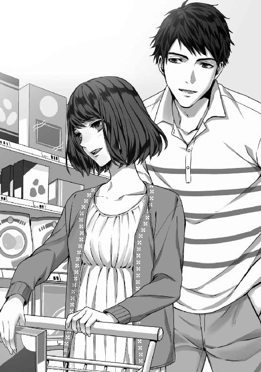
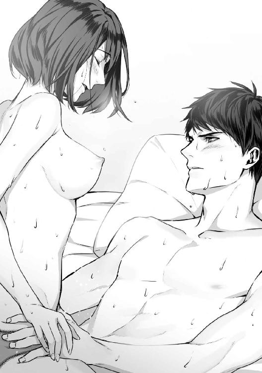

| 幼馴染みは秘蜜のとろ甘同居人 (LUNA文庫) | |
| 有涼 汐 | |
| 天海社／LUNA文庫 (2018) | |
幼馴染みは秘蜜のとろ甘同居人
[著者]有涼汐
[イラスト]園見亜季
第一章
〝幼馴染み〟だからといって、仲がいいとは限らない。
同い年であれば接点も多いが、年が離れており、なおかつ異性であれば関わりは減っていく。しょせん、ただのお隣同士というだけだ。
浮本杏には四歳年上の幼馴染みがいる。彼――市芝和真との一番印象深い思い出は、杏が九歳、和真が十三歳のころ。同級生の男子にいじめられ、お気に入りだったぬいぐるみが泥だらけになった。それを強く抱きしめながら泣いているとき、和真が慰めてくれたのだ。
それだけを聞けば素敵な幼馴染みエピソードだが、実際は違う。あのとき、和真は、杏がわかるほどに面倒くさそうな顔をしていた。それだけならまだしも、言葉にも出した。「なんで俺が......。めんどくせーし、わかんねーし......」と。幼いながら、この幼馴染みは優しくないのだと理解した。
それ以降、杏と和真の距離は年々離れていった。もともと近かったわけでもないし、自然な流れだったのだろう。
年齢差的にも小学校までしか一緒に通う時期が被らなかったのも理由の一つだ。それに、家を出る時間も帰ってくる時間も違った。
たまに会えば、お互い無視か会釈をする程度の関係。
けれど、杏は和真の近況を詳細に知っていた。杏の母と和真の母はとても仲がよく、食事中やリビングにいるときの世間話に、和真の話を聞かせてくるのだ。頼んでもいないというのに、母は毎日のように「気になる和ちゃんニュース！」と楽しそうに話す。そのニュースは杏が大学を卒業し、社会人になる年齢になっても続いた。
寒い冬が終わり、もうすぐ暖かくなって桜の咲く季節になるころ。杏はリビングで紅茶を飲みながらスマホを弄っていた。社会人になると同時に、杏は実家を出て一人暮らしをすることが決まっている。引っ越しも来週に迫っていた。
なので、いまスマホで眺めているのは、新しい部屋で使うためのカーテンや食器類だ。これから一人というのは不安でもあるが、大人になる一歩のような気もしていて浮き足立つ。
「ねぇねぇ、杏」
ふいに、キッチンにいる母親が話しかけてきた。
「なに？」
「今日の、和ちゃんニュース！」
心底どうでもいいニュースであったが、杏は呆れつつも「なーにー」と言葉を返す。返事をせずに無視をして「興味ない」と言うと、母が拗ねてしまうのだ。そして母が拗ねると、父が心配して「どうした？ どうした？」と母のあとをついてまわる。両親の仲がいいのは素晴らしいことだが、目のやり場に困る。
両親は結婚をして二十年を越えるが、相変わらずお互いのことが大好きだ。それはいいのだが、娘の存在を忘れるのはやめてほしい。
「和ちゃんが帰ってくるんだってー」
「ふぅん」
「あら、なにその態度。興味なさそうにして」
〝なさそう〟なのではなく〝ない〟のだ。数年会ってもいない、まして連絡も取っていない年の離れた幼馴染みのことなど、そこまで気にしない。
「いつって言ってたかしら......。たしか今月中には帰ってくるみたいなのよね」
和真は今年社会人四年目の、二十七歳。和真が勤めている会社は全国に支社があり、彼は本社で一年勤めたあと、他県の支社へ転勤となった。そこで最低三年、長くて七年働くことになっていた。会社によって違うが、和真の会社はそう言われているらしい。
それを考えれば、和真が戻ってくるのは早かったということになる。
「でも、和ちゃんってば実家には帰ってこないんですって。まぁ、ここから会社までけっこう時間がかかってたし、しかたないことかなーとは思うんだけどね」
「まるで自分の息子のことのような台詞......」
もちろん、全部和真の母が言っていた台詞なのだけど。
母が口を開いた瞬間、居間のインターホンが鳴り響き、点滅する。母はお菓子を作っていて手が離せないので、杏が立ち上がり玄関へと向かう。
玄関を開けると、そこには隣のおじさん――和真の父が気まずそうに立っていた。
和真の父が杏の家を訪ねてきてから、二日が経った。杏は小学校時代からの友人である荒川南と駅前のファミレスにいた。
「それで、どうするの？」
「どうするもどうしないもないわぁあ......」
杏はテーブルのうえに額をくっつけて呻いた。そんな杏を南が可哀想な子を見る目で一瞥する。
そして、「杏も大変ねー」と全然心がこもっていない台詞を言いながらパフェを頼む。
「ぜんっぜん！ 大変って思ってないでしょ」
「そんなことはないけど、私にはどうしようもないもの」
たしかにそのとおりなのだが、もう少しだけ親身になってもらえるととても嬉しいのに。
けれど、逆の立場だったとしたら、南と同じ反応をしただろうから文句は言えない。
一昨日、和真の父がやってきて聞かされた話が杏を悩ませている。
杏は今年の四月から社会人となるが、就職することになった会社が自宅からでは一時間半以上かかり、乗り換えも最低二回はしなければならない。会社からの補助も出ることから、実家を出て一人暮らしをすることに決め、アパートを探していた。
ただ、母がとても心配して、女性が一人でも安心して暮らせるオートロックのマンションでないと駄目だと言ってきたのだ。新入社員の給料などたかがしれており、オートロックのマンションになど住める余裕はない。
どうしようかと途方にくれていたとき、相談をしたのが和真の父だった。和真の父は、不動産会社で働いているので、どこかいいところがないか探してもらいたかったのだ。
すると、和真の父が「それなら、俺の弟のマンションを貸そうか？」と言ってきた。
そのマンションは駅から徒歩五分でオートロック、治安もよく会社まで電車で二十分ほど。それに分譲マンションのため、支払うのは管理費のみでいいとのこと。そんな好条件、なにかの詐欺にしか思えないが、そこは信頼できる人からの提案。杏は一も二もなく飛びついた。
杏はそれまで聞いたことがなかったが、その弟というのは有名な食品会社の社長だそうだ。娘婿として結婚をし、現在は主に他県で働いているとのこと。こちらに帰ってきたときのために、マンションを購入したが年に一回帰ってくるかどうか、帰ってきても日帰りばかりのためマンションを売りに出すか、誰か住んでくれればと和真の父に相談があったらしい。
なんて素晴らしいタイミングでのお話なのかと、杏は喜んだ。両親も、和真の父が仲介であるのならと、一人暮らしを認めてくれた。
そして、気づけばもう引っ越し間近で、準備はそこそこ終わっている。あとは、家電を買いにいくだけだと思っていたのだが......。
「まさか、期限付きとはいえ、和真くんと一緒に住んでもらえないか......だもんね」
「普通、年頃の男女を一緒に住まわすかね......」
「年頃っていうほど、若くないわよ。二人とも一般的には大人といわれる年齢だもの」
杏は南の言葉に唇を尖らせた。
そう、一昨日聞いた話というのは例のマンションに住むのは和真が一緒でもいいかということだ。
最初はなにを言っているのか意味がわからなかったが、説明を聞いている間にだんだんと理解が追いついていき、最終的にはキャパオーバーして途中からなにも覚えていない。
和真が今年こちらへ戻ってくるというのはかなり前から決まっていたようで一人暮らしをするためのマンションも半月ほど前に決めていたらしい。
だが、これから契約だというときに和真が借りる予定だった部屋の隣で火事が起こった。
その火は両隣の部屋にまで燃え広がり、住める状態ではなくなってしまったのだ。それから新しく住む場所を探そうにも、三月は引っ越しのピーク時期。立地条件などがいいマンションはすでにどこも埋まってしまっている。
だからといって、仮住まいだとしても住む場所を妥協しすぎるのは不便だ。そこで、半年のあいだだけでも、杏が借りるマンションに一緒に住むのはどうかという話になったようだ。
要は「半年間だけ」和真と同居生活をするということ。
これが女の幼馴染みであったのなら、別に問題はなかったし、喜んでという感じだ。しかし、ほとんど関わり合いがないとはいえ一応男と女だ。いろいろと考えるだろう。
杏が母に「異性なんですけど」と伝えたところ、母は「あら、私は和ちゃん大歓迎だもの」とそれはもう、素敵で素晴らしい笑顔を見せられた。
半年。一年の半分。たったともいえるが、長い期間だとも思う。和真のほうはそれで了承しているのか和真の父に問うたところ、彼はかまわないとのこと。そうでなければ、杏にこの話がくるわけがない。
杏は悶々としながら、おいしそうにパフェを食べる南を見た。
「でも、本当だったら杏が借りるマンションは和真くんが借りてしかるべきよね」
「それね。そこなんだよ」
そもそもあのマンションは和真の叔父のものであって、杏はご近所のよしみで貸してもらえるという話だったのだ。本来であれば、杏が断ればいいだけの話。
杏が和真の父から話を聞いたのが年明け。和真が戻ってくることがわかったのが三月の初め。先に杏が話をもらっていたから、和真に声をかけなかっただけで、そうでなければ和真が借りていたはず。
同居生活の話も、和真の父もさんざん葛藤をしての提案だったのだろう。自分が断ってしかるべきとわかっていながらも、防犯のことや家賃のことを考えると断るのが惜しい。ここで断れば、今度は杏がアパート探しだ。決まらなければ毎朝一時間半の通勤となる。
「他人事だからって言われると思うけどさ。半年でしょ？ 半年なんて杏は仕事を覚えるので必死だろうし、和真くんだって本社に戻ってきてすぐだから忙しいと思うんだよね。あんまり顔合わせないんじゃない？」
「んー、たしかに」
「それに、和真くん。マンションになかった冷蔵庫と洗濯機を持ってるでしょ？」
「......あっ」
「両親に借金して買う予定だったって言ってたじゃない。その分の費用がかからないってラッキーじゃない。半年もあれば、最低限のものを買うお金も貯まるかもだし」
そうだ。和真は引っ越し前に火事があったため、家電全般無事だった。それを持ってきてもらえるのならば、家電を買わなくてすむ。
和真の叔父のマンションは、あまり来ないというだけあって、最低限のものしか置いていなかった。外食をするから冷蔵庫もないし、自宅に服を持って帰るから洗濯機もない。あるのは四人がけのテーブルとイス。そして各部屋のエアコンと寝室の大きなベッドのみだ。
エアコンがあるだけありがたい話だが......。
現金な話なのは、杏自身、重々理解している。それでも、この話を断るにはもったないほどにメリットが多すぎる。デメリットは、一緒に住むのが距離が遠い幼馴染みの男ということ。
「杏が悩む理由はすごいわかるけどね。どうしても嫌なら断るしかないよ」
「うぐぅ......」
結局悩みに悩んだ結果。杏はその同居生活の提案を受け入れることにしたのだった。
第二章
三月中旬の引っ越しピーク時期。杏は自分がこれから暮らすマンションにやってきていた。今日は引っ越し当日。両親が手伝ってくれると言ったが、杏は一人でやると断った。一人分の片付けなので、そこまで時間はかからない。それに、引っ越したのだという実感を得たかった。
和真の叔父のマンションは五階建てで、その五階の角部屋がこれから住む部屋だ。
間取りは２ＬＤＫで、玄関に入ると左右と真正面に扉がある。真正面はリビングで、右の扉は三つ、トイレと風呂と洋室。左の扉は二つ、収納と洋室だ。二つの部屋の広さはあまり変わらないが、収納の多さが違う。
和真は叔父が使っていた寝室を、収納が多いほうを杏が使うことになっている。
杏はクローゼットに洋服や鞄を片付けていく。部屋の掃除をあらかた終えてから、リビングに向かい食器棚の前に立つ。もともとついていた食器棚は、ほとんど空っぽで高そうなグラスが数点入っているだけ。
「これ、割ったらやばそう......」
できるだけ触らないでおこうと心の中で決意しておく。食器棚に自分の食器を入れていく。ゴミを片付けて一息ついた。
フローリングのうえにぽつんと座り込み、辺りを見渡す。当たり前だが、見覚えのない景色。これから短い間だったとしても、ここが自分の家になるのは不思議だ。
「一人暮らしをするって、なんか変な気持ちになるんだなぁ。いや、一人暮らしじゃないけど」
そして、独り言も増えるようだ。
まだ片付けは終わらないけれど、いったん終了させて杏は着替えて外に出た。マンションを出てすぐ近くにコンビニがあり、少し歩けばスーパーがある。暮らしていくには困らない環境だ。
コンビニに行き、お弁当を物色する。あまりコンビニのお弁当を買わないので、楽しい。お弁当のラインナップもスタンダードな幕の内弁当から、パスタなどさまざまある。
ミートソースパスタとスープ、そして期間限定のデザートを買って戻る。テレビをつけ、バラエティ番組を見ながら食事をする。笑える番組を見ながら、ゆっくりと夕飯を食べるのはとても気楽で、自由だ。けれど、いままで両親と一緒に食事をとっていたため、寂しい気持ちが足先から徐々に湧き上がってくる。
「一人って気楽だけど、寂しくもあるのかぁ」
だんだんと食べているものがおいしくなくなっていく。結局、お弁当を少しだけ残し寝る支度をして、自室へと。ベッドに寝転がりながら、スマホを弄る。南ととりとめない会話をしてから、夜の十二時には部屋を暗くし眠りにつく。
いつもならすぐに眠れるはずだというのに、今日はまったく眠れない。むしろ、空調の音などの無機質な音が耳について気になってしまう。
何度か寝返りを打っても、羊を数えてみても、眠らなきゃと思っても、眠くなってはくれない。
「もー、寝れないのむかつく......っ！」
杏はガバッと掛け布団をまくりあげて、ベッドのうえに座り込む。こういうときは無理に寝ようとしても逆効果。なので、ホットミルクを飲むことにした。
「眠れないときは眠れない、だ」
小さいころ眠れないときは、いつも母がホットミルクを作ってくれた。それがおいしくて、嬉しくて、ホッとした。ホットミルクなんて誰が作っても、味が変わるわけではない。それでも、母が作ってくれたホットミルクは格段においしかった。
キッチンの電気だけをつけて、お鍋の中に一杯分の牛乳を入れた。電子レンジで作れば楽なのだが、あいにく電子レンジはないしお鍋で温めたほうが丁度いい温かさになる。
温めた牛乳をマグカップに入れ、両手に持ちながらソファーに腰をかける。これからは、この静けさと無機質な音に馴れなければならない。数日もすれば和真がやってくるので、一人ではなくなるが、彼も仕事で帰ってこない日があるだろうし、帰りも遅い可能性だってある。そもそも、同居するからといって関わらなければならないわけではない。お互い無関心でいれば、一緒に暮らしていても空っぽだ。
「......。頑張ろう」
いろいろと不安なことはある。それでも、これからは一人で毎日を生きていかねばならない。両親と縁を切ったわけではないが、自立をしていくためには必要なことだ。親から見て、子どもはいつまで経っても子どもなように、子どもから見ても親はいつまで経っても親なのだ。だからといって、一生甘え続けていいわけではない。
杏はマグカップを水につけて、ベッドに戻る。そして目を瞑り深く息を吸い込んでゆっくりと吐き出した。それを繰り返していくと、意識はだんだんと落ちていき眠りについた。
杏が引っ越してから二日後。玄関のチャイムが鳴った。
「とうとう、来たか」
インターホンをとると、そこにはどこか見覚えのある男性が立っている。杏はエントランスの扉を開け、引っ越し作業をしやすくするために、部屋の扉を開けていく。すると、もう一度インターホンが鳴り、ようやく玄関を開けた。
「ひさしぶりだな」
「......ひさしぶり......デス」
関わりが少なかったこともあり「久しぶり」と言ったあとに、敬語を使ったほうがよかったのではと、変な敬語を使ってしまう。
「敬語とかいらないから」
和真は呆れたように笑う。部屋の中に招き入れると、和真からあと数分もすれば引っ越し業者がやってくると伝えられた。
「いつ引っ越してきたんだ？」
「一昨日には」
「そうか」
うまく会話が続かないでいると、インターホンが鳴り、引っ越し業者が到着したことを告げた。その後は、ばたばたと引っ越しを済ませていく。和真は自室の片付けを、杏は和真の食器類を食器棚に片付ける手伝いをした。手伝わなくても問題ないことではあったが、家にいて部屋に引きこもっているのも居心地が悪い。昼前から始めた作業は、夜になってようやく終わった。
家電やキッチン道具が揃ったとはいえ、これから食事を作るのはとても億劫だ。
「出前でもとるか？」
「そう、だね。えーっと、この辺りで配達してくれるお店は......」
スマホで検索をかけると、そばやファーストフード、そのほかにカレーやアメリカンハンバーガーなどのお店がたくさん出てくる。少し話をして、ハンバーガーを頼むことにした。
「引っ越しバーガーだね」
「現代っぽいよな」
和真が楽しそうに笑いながら、髪の毛を掻き上げる。その姿にドキっとしてしまう。改めて、久しぶりに会った幼馴染みの和真を見る。
杏が彼を見た最後の記憶は、和真が高校生ぐらいのとき。それから数年経って、いま目の前にいるのは大人の男性。当たり前ではあるが、当時との違いに動揺してしまう。自分より身長が高く、無造作に整えられた黒い髪、そして太く筋が通った腕。
どれもこれも、杏の知らない和真だ。興味のない幼馴染みのはずだというのに、うろたえてしまう。そんな感情を持つ自分にも違和感を持った。
「おい、どうした？」
「え、いやっ、なんでもないよ！」
「そう？ ならいいけど」
和真は気にしていないようで、視線をテレビに向けた。一人慌てている自分がなんだか悔しい。ムッとして、唇を尖らせているとインターホンが鳴ったので立ち上がると、和真が杏の腕をとる。
「へ？」
「俺が出る。座ってな」
ぽんぽんと杏の頭を軽く撫でた和真は、インターホンをとった。杏は、触られた場所が熱くなって、口をぱくぱくと開閉してしまう。
「な、んで、照れてるかなぁ。私......っ」
免疫がないにもほどがあるレベルだ。一応高校や大学のときには彼氏がいたし、経験だって済ませている。けれど、いまみたいに触れられた場所が熱くなったことはなかった。
きっと大人の男性と関わるのが少なかったから動揺しているだけで、幼馴染みに対して動揺しているだけで深い意味はないはず。
和真が戻ってきて、テーブルに食事が置かれる。杏は、冷蔵庫からお茶を取り出してテーブルの上に置いた。和真がグラスを出してくれたので、お茶をグラスに入れて、〝いただきます〟と口を揃えた。
まだ温かいハンバーガーを食べながら、引っ越し当日のことを思い出す。夕飯を食べている最中、どこかさみしさを募らせていた。たとえほとんど会話がなくても、人と一緒にとる食事というのはやはり落ち着く。
もくもくと夕食を終え、片付けを二人で済ます。
「コーヒー淹れるけど、おまえは？」
「じゃあ、お願いします」
杏はソファーに座って、テレビのチャンネルをまわしていく。
「なんか、面白いテレビやってる？」
「んー、あんまり」
「そうか」
和真からコーヒーを受け取り、口に含む。苦いコーヒーは、大人と呼ばれる年齢になってもあまり得意ではない。ミルクとシュガーを入れた甘いほうが好きだが、和真に子どもだと思われたくなくて、なんでもないようにコーヒーを飲み続けた。
「とりあえず、いろいろと決めたほうがいいかと思うんだ」
「決めるって......なにを？」
「これから生活するにあたってのルールみたいなもの。同居だろうと同棲だろうと、短かろうと長かろうと、一緒に生活をするんだったら必要な決め事ってあったりするだろ？ お互いが気持ちよく暮らしていくためにもさ」
「......たしかに、そうだね」
「基本的に食事は別々で頼む。これから仕事で忙しくなるだろうし、毎日同じ時間に帰ってくるとかも無理かと。それに、しばらくはこっちの友達と外食が多いと思う」
「私も、今年から社会人で、これからどうなるかわからないから。そっちのほうがありがたい。家でご飯食べるときも、自分の分だけ用意するのでいいかな？」
「うん。自分の食事は自分で用意。それと片付けもな。掃除は、自分の部屋は自分でやること。それ以外の掃除場所は、週で交代ってことにするか？」
「それでいいよ」
和真と話し合った結果、決まったのは基本的にはお互い無関心で過ごすということだった。自分のことは自分でする。相手のものを勝手に触らない。共同スペースは汚さず綺麗にすること。遅くなる場合や帰ってこないときのみ連絡を入れること。最後に帰った人間が玄関のチェーンをかけることを決めた。それ以外は、その都度なにかあればお互い言うことにした。
「一緒にいるときは、一緒に食事ぐらいとってもいいとは思ってるんだ。飯だって、外で食ってもいいし今日みたいに出前をとったってかまわない。どっちが作ってもいいしな」
「作れるんだ」
「失礼なやつだな。一応これでも、長く一人暮らししてたんだ。大抵のことは自分でできるよ」
「そっか、そうだよね。ごめん」
「別に謝ることじゃないって。さてと、俺シャワー浴びて部屋戻るけど」
「あ、うん。私もう少しテレビ見てる」
「わかった」
和真の後ろ姿を見送って、深い息を吐き出しながらソファーに沈む。気づいていなかったが、相当緊張していたらしい。一人になってやっと気持ちが落ち着いた。いまの杏から見れば和真は見知らぬ男性なのだから、あたりまえのことだが。
扉の開閉音が聞こえ、そのあと、小さくだがシャワーの音も聞こえてきた。杏は、ごろんとソファーに寝転がりながら、テレビを見つめる。これからどうなっていくのか、やはり不安はつきまとう。会社だって、来週には入社式だ。やるべきこと、やらなければいけないことがたくさんある。この同居生活に心を砕いている余裕も暇もいまの杏にはない。
半年。たった半年だけの同居生活。
きっと何事もなく日々は進み、何事もなく別れ、最後には関わり合いのない幼馴染みに戻るのだ。そんなことを考えていると、また開閉音が聞こえ、静かになった。和真が部屋に戻ったのを見計らって、杏も一度部屋に戻り着替えを持ってシャワーを浴びに向かう。湯船に浸かりたいところだが、一人しか入らないのならもったいない気持ちになる。
風呂場にある二つ分のシャンプーや和真のカミソリを見て、なんともいえない気持ちになった。いたたまれないというのか、恥ずかしいというのか。
「あぁああああっ！」
シャワー音に紛れさせながら小さく叫んで、ばたばたと足を踏む。どうしようもなく照れる。この同居生活に意味はなく期間限定のもの。わかっているけれど、この感情は生まれてしまう。他人――しかも男性と暮らすのだから普通のことだ。こんなことは普通の現象だ。久しぶりに会った幼馴染みをかっこいいだとか、男性だと思って意識したなんてことは絶対にありえないし、あってはならないのだ。
「大切なのはこれから社会人としてやっていくことなんだから。こっちのことに気を取られたらダメダメ！」
杏は、ぐっと両手を握りしめて自分に言い聞かせる。そして、頭をふるふると振り、あらためて身体を洗いお風呂場を出た。髪の毛を乾かして、自室へ戻りスキンケアをしてベッドに潜る。
しばらくスマホのアプリゲームで遊んでから、部屋の電気を消した。
この二日間、無機質な音ばかりが聞こえて、なかなか眠りにつくことができなかった。けれど、今日は人の気配と音がする。それがこんなにも安心するとは思わなかった。杏は落ち着いた気持ちで、眠りについた。
それから数日。和真は戻ってきたばかりというのもあって、高校や大学のときの友達と飲み歩いている。杏は杏で、南とご飯に行ったり入社式に向けていろいろと準備をしたりしていた。まだまだ時間があると思っていたのだが、入社式は気づけば明日だ。杏は、ベッドのうえで何度も寝返りを打つ。
「寝なきゃと思うときに限って眠れないっ。明日はもう入社式で、寝なきゃ駄目なのに。駄目なのに......」
まるで、遠足前の幼稚園児状態だ。緊張してしまい、どうしても眠ることができない。今日もまたホットミルクにお世話になろうと、ベッドから抜け出た。冷蔵庫から牛乳を取り出すと、リビングの扉が開く。
気配がしなかったので、驚いて勢いよく振り返ると和真が扉に寄りかかりながら立っていた。
「寝れないのか？」
「......うん」
「貸せ。うちのホットミルク飲ませてやる」
和真は杏から牛乳を受け取ると、鼻歌を口ずさみながら牛乳を鍋に入れて火をつけた。牛乳の独特な匂いが鼻腔をくすぐる。冷蔵庫からなにかをとりだし、鍋に放り込んだ。杏はイスに座り足をぶらぶらとさせながら、和真の背中を見つめる。
少しすると、和真がマグカップを渡してくれる。表面には薄い茶色のなにかが浮かんでていて、鼻を近づけて嗅いでみるとどうやらシナモンパウダーのようだ。
「シナモンだ」
「ほら、飲んでみ」
「うん」
こくりと一口飲むと、喉の奥を温めてくれてそれが全身に染み渡っていく。
「なんか、違う味がする......。チョコ？」
「そ、チョコ。母さん特性のホットミルクはチョコとシナモンを入れるんだ。眠れないときはこれが一番で、引っ越しをしてからレシピ教えてもらったんだよな」
杏の前に和真が座り、肘をつきながらこちらを見て笑う。
「......うちとは違う味。でも、すごくおいしい」
「そう言ってもらえると、母さんも喜ぶよ」
全身をホットミルクで温めて、一息つく。杏がホットミルクを飲み干すのを最後まで見届けた和真は、立ち上がり杏の頭をくしゃりと撫でた。
「大丈夫。初日なんて、みんな緊張してるもんだ。いっちょまえにできなくてあたりまえ。怒られたら、そこから覚えていけばいいんだから」
「......」
「センパイからの余計なお世話な一言だよ。聞き流してくれてもいい」
「んーん、ありがとう」
杏は飲みきったマグカップを両手に包み、空っぽの底を見つめながら首を振ってみせた。杏の中にあった不安や緊張などが和らいで、気持ちが楽になった。
「じゃ、おやすみ」
「おやすみなさい」
和真に言葉を返して、杏はマグカップを洗う。彼は杏が飲むのを見ていただけで自分がなにかを飲むことはしなかった。ただ、杏のためにホットミルクを作り、少し話をして戻っていった。その優しさに、杏の胸は温かくなる。
お互い無関心でいようとは決めていたが、無関心でいることと無視をすることは違うのだなとあらためて知った。ホットミルクのおかげか、眠気がやってきて欠伸が出る。杏はさっさとベッドに潜り、眠りについた。
翌日。買っておいた真新しいスーツを着て、髪の毛をワックスで落ち着かせる。つけっぱなしにしていたピアスを外し、バサッバサッとスカートの裾をはたいた。部屋を出て、リビングにいくと和真が朝食をとっていた。
「おはよう」
「おはよ。スーツ、なかなか似合ってるじゃん」
「ありがとう。でも、着られてる感がすごい......」
「最初はそんなもんだって。だんだんとそんな感じもなくなって、誰がどう見ても社会人だーってなるもんだよ。おまえの会社ってスーツ着用必須？」
「うぅん。女性はオフィスカジュアルで平気。社外の人と会う場合はできるだけスーツ着用が好ましいって感じだったと思う」
「そうか。男は基本スーツ着用だから楽だが、オフィスカジュアルとなると大変だな。毎日服装考えるの」
たしかにそうだが、新入社員は最初の数ヶ月さまざまな部署に行って研修を受けるため、基本はスーツ着用だ。その後の配属によって格好もまた変わるだろう。周りの人たちを見て、どこまでをオフィスカジュアルとしているかを確認しなければ。
和真は食器を片付けて、ジャケットを手にとる。
「じゃぁ、俺は先に出るよ。今日は帰ってくるの遅いから。気楽にな」
すれ違いざまに、杏の肩をぽんぽんと叩いて和真は出社していった。杏は食パンをトースターにかけて、卵焼きとベーコンを焼いた。今日は一日疲れるだろうし、朝はちゃんと食べたい。
朝ご飯を作りながら、食事をしてから着替えればよかったと少し後悔する。汚さないように気をつけて、朝食を食べなきゃいけないところまで考えていなかった。それだけいまの自分には余裕がないらしい。
「明日からは着替える前に食べよ」
焼きたてのトースターにバターを塗って、朝食をとる。余裕をもって家を出て、駅に向かう。わかっていたが、ラッシュの時間のため駅は人でごった返している。これが毎朝続くのかと思うと憂鬱になる。必死に電車に乗って、なんとか会社の最寄り駅に着いた。
杏は、会社のビルを見上げて息を大きく吸う。心の中で「頑張るぞ！」と気合いを入れて、社会人一日目を体験するべく出社した。
一日会社で働いた感想は「疲れた」につきる。めまぐるしい一日を終え、同期と駅前で別れてぐらぐらする頭でなんとか家まで帰った。
スーツのまま、化粧も落とさずベッドに寝転がって深い息を吐く。高校時代はバイトをしていたが、そんなものとは比にならないぐらいに疲れた。
「働いてる人ってすごい......」
まだたった一日しか働いていないのに、こんなんでは先が思いやられる。それに、ここが実家であれば母が食事を作ってくれただろうが、いまは一人だ。出前にするにせよなにかを買ってくるにせよ自分でやらなければならない。それがとても億劫で、一日ぐらい食べなくても問題ないのではと思ってしまう。
「ダメだ。とにかく寝たい......。寝よう......」
お腹は空いているが、なにかをするにはあまりにも面倒なのでダイエットになっていいかもと思うことにした。重い身体を引きずってシャワーを浴びて髪の毛を乾かした。惰性でスキンケアをして、ベッドに潜る。なにかを考えるまえに意識は落ちていってしまった。
ふ、と目が覚めて手元にあったスマホで時間を確認する。
「に......じ......」
目をごしごしと擦りながら、重い頭を持ち上げる。電気はつけっぱなしだし、スマホの充電もできていない。杏はため息をついて、スマホを充電器に繋いだ。
スマホを開くと、南から、初日はどうだったかという連絡が入っていた。時間も時間なので、返事は明日の朝にしよう。
「目がさえちゃった」
眠気があれば、このまますぐに眠るのだが起きてしまったので眠ることができそうにない。杏は、鞄からメモ帳を取り出す。
今日会社で取ったメモだ。急いで取った部分もあるので、読みにくい。
せっかくだし眠くなるまで、少しだけ今日の復習と予習をしておこう。そうすれば、明日の自分が楽になる。真新しいノートを出してきて、自分の頭の中でも整理しながら走り書きを清書していく。
教えてもらったことを少しでもちゃんと理解しておけば、新しく教えてもらったことも頭に入りやすい気がする。
整理を終えると二度目の眠気がやってくる。杏は、身体をぐっと伸ばして少し硬くなった身体をほぐす。いまならぐっすり眠れそうだ。ベッドに潜って、電気を消す。そして、そっと目を閉じた。
コンコン――と、なにかを叩く音が遠くから聞こえる。静かになって、またコンコン――と音が聞こえてくる。いったいなんの音だろうかと、重い瞼をどうにか開いた。
「おーい、起きなくていいのか？」
「......いま、なんじ......」
ぼんやりとした頭で、スマホの時間を確認すると起きる予定時刻よりも遅い時間だった。
「ひぃっ！」
一気に覚醒して、杏は慌ててベッドを降りて扉を開く。
「うぉっ!?」
「あ、ごめん！ おはよう！ ありがとう！」
「いいけど。慌てすぎて転ぶなよな。俺はもう出るから......って、聞いちゃいねぇな」
和真の声が微かに聞こえてきたが、自分のことで手一杯な杏は彼を気にすることなどできない。急いで顔を洗って、軽く化粧をしスーツに袖を通して家を飛び出した。なんとか、間に合う時間の電車に乗れたが、まさか二日目から寝坊するとは思いもしなかった。夜中に起きてしまい、そのまま眠らずにいたせいだろうか。アラームをかけ忘れたのも寝坊の原因だろうけれど。
（先が思いやられる......）
杏は満員電車の中で、揺られながら一人小さくため息を漏らした。
この日も定時を少し過ぎたぐらいで退社し、最寄り駅まで戻ってきた。
本来であれば、スーパーに寄って買い物をして夕飯を作りたいのだが、昼食を食べ過ぎたせいでお腹が空いていない。昨日の夜、今日の朝と食事をしなかったせいでお昼にお腹が空きすぎていたのだ。許容よりも多くとってしまったので、いまだにお腹は苦しい。
「......帰ろ」
コンビニに寄って、カップ麺とスープのカップを買っておく。お腹が空いたらそれを食べればいい。
家に帰っても部屋は真っ暗だった。まだ和真は帰ってきていないようだ。今日は遅いという連絡は来ていないが、帰ってくるのは夜中に近いだろう。
杏はテーブルの上にコンビニの袋を置いて、ジャケットを脱いだ。
「はぁ......」
仕事をしてお金を稼ぐというのは大変なことだとあらためて実感する。一日長時間拘束され、自由になる時間はお昼の一時間のみ。大学という自由気ままな生活から一変した日々だ。仕事がどんなことかは理解をしていたけれど、実際にやってみるのとではまったく違う。
慣れない状況で、慣れないことをやり、毎日毎日新しいことを覚えていくことは思っている以上に精神的にも肉体的にも疲弊していく。
そのせいか、とても眠い。
杏は結局、化粧を落としシャワーだけ浴びることにした。寝る支度を済ませたあと、スマホでアラームの設定だけはしてベッドに潜る。すぐに眠れるかどうか少し不安だったが、眠気はあっさりとやってきた。
意識が覚醒し、目を開ける。時間を確かめるとまた夜中の二時だった。
「もぉお、なんで......」
起きたくはなかったけれど、目が覚めてしまったのならしかたがない。起き上がって、また今日も昨日と同じようにメモ帳の整理をし、また眠りについた。
アラームの音が耳元で鳴り響く。
重たい頭を振って起きあがり、アラームを止める。今日はなんとか余裕を持って行動できる時間に起きることができた。ふらふらとした足取りで洗面所に向かい、顔を洗う。鏡に見えた顔は、たった二日にして少しやつれてみえる。
リビングに行くが、和真の姿は見えない。昨日杏がテーブルに放置したコンビニ袋が片付けられていたので、一度帰ってきたようだ。
「気をつけよ」
共同スペースは綺麗にするという約束だったのに、コンビニ袋を置きっぱなしにしてしまった。せめて自分の部屋に置いておくようにしないと。
杏は牛乳とシリアルバーで朝食を済ませ、会社に向かった。
最初の一週間は、新入社員ということもあり定時で上がれていたが少しずつ慣れてくると、会社に残る時間も比例して増えていく。基本は定時で上がってもいいのだが、自分の仕事が終わりきらないので帰るわけにはいかない。同じ部署の人たちは「自分たちがやっておくから、帰っても大丈夫よ」と言ってくれたが、甘えるのは躊躇われる。自分がやるべきことはやらないと。
必死に仕事をして、まわりに置いていかれないようにしないと。せっかく正社員で会社に入ることができたのだから、役に立てるようにならなければ。そういう気持ちで、必死に仕事をこなしていった。
気づけば入社してから一ヶ月が経過していた。
毎日軽く朝食をとって昼を食べて夜はほとんど食べずに眠るが、夜中に起きて少し動いてまた寝る日々が続いている。トータルで睡眠はとっているつもりだが、夜中に起きてからもう一度寝て起床するまではだいたい三時間から四時間程度しか眠っていない。
はたして、それでは睡眠がとれていると言えるのかわからない。
それに食事のバランスが悪すぎて顔色は悪くなっていくばかりだ。化粧でもごまかしがきかなくなってきていた。
「......、疲れた」
身体がだるいし、頭も重い。けれど今日は金曜日だ。
今日頑張れば土日が待っている。土日に休んで食事をちゃんととれば体調も顔色もよくなるはず。今日だけ、今日は頑張ろう。
自分に何度も言い聞かせながら一日なんとか仕事を終えた。やっと帰れると一息ついたとき、同じ部署の上司から「今日の帰り飲みに行くけどいかない？」と誘われた。最初は断ろうと思ったのだが、まわりのみんなにも誘われて断りにくくなってしまった。
結局断ることができず、少しだけという気持ちで飲み会に参加した。
夜の七時から始まった飲み会が一段落したのは、十時を過ぎたころ。これから二次会でカラオケに向かうようだ。杏は、頭がぐらぐらしてきてしまったので一人帰ることにした。少ししか飲んでいないのだが、体調があまりよくないのもあって酔いが回るのが早い。
なんとか帰宅したものの、息が熱く身体が鉛のように重い。鞄を置いて、パンプスを脱ごうとしたまま玄関先で倒れ込んでしまう。
「や、ばい......かも」
起き上がろうとしても、身体が言うことをきいてくれない。駄目だと思うのに、せめてベッドまでと思うのに、杏の意識は落ちていく。
ふと、身体が浮いている夢を見た。
温かいなにかに包まれながら、ゆらゆらとゆりかごの中にいるような。優しくて大きな手が、頬や額を撫でてくる感覚がする。
ぼんやりとした意識で瞳を開くと、誰か――和真が瞳に映った。
「いくらなんでも頑張りすぎ、少し気を楽にして休め」
ぼんやりと辺りを見渡すと、どうやら自室のベッドまで連れてきてくれたらしい。
「う......ん」
「まともに飯も食ってないだろ？」
和真は杏の頭をくしゃりと撫でて、杏の部屋から出ていった。杏は、迷惑をかけてしまったのが申し訳なくて深い息を吐く。スーツが堅苦しくて全身が痛いし、化粧だって一日経ってどろどろだ。けれど、着替えるのも化粧を落とすのも億劫だ。ファンデーションが枕についてしまうかもと思いながら、ごろんと寝返りを打った。
うとうととしていると、扉をノックする音とキィっと開く音が聞こえた。
「ほら、化粧落とし」
「え？」
「化粧落とさないと、大変なんだろ？ さっさと拭く」
「は、はいっ」
渡された化粧落としシートで、化粧を落としていく。すると、棚にあった杏の化粧水を手渡してくれる。手渡されるままに、化粧水や乳液をつけていく。
「これで全部だな。あと、熱出てるみたいだからコレも貼っとけ」
「ぎゃっ」
べたっと額に冷たいものが貼られて、変な声をあげてしまう。触ってみると冷却シートだった。
「とりあえず、今日は寝とけ。明日はちゃんと飯食えよ」
「はー、い」
和真がいなくなったあと、杏はどうにか身体を起き上がらせてスーツを脱いだ。ハンガーにかける元気はないので、フローリングに落とすだけ。近くにあった長袖だけを着て眠ることにした。
次の日のことを考えないで眠るのは気持ちがいい。毎夜、朝起きる時間や仕事をどうするかを悩みながら眠るので、たとえ長い時間眠れたとしても寝た気があまりしなかった。
のんびりとした気持ちで目を覚ますと、朝の十時だった。重かった身体は少し軽くなっているし、ぐらぐらしていた頭も治っている。昨夜は疲れが一気に出たのだろう。
あくびをしながら、扉を開けると目の前に和真がいた。
「......いい眺めだな」
「なにそれ」
「それとも、まさか俺を誘っているとか？」
「いや、なにを言っているのか理解できな......」
仁王立ちで、眉間に皺を寄せたところで自分の格好を思い出す。昨夜長袖だけを着て眠ったため、下半身は現在下着のみという姿。
「ひぃい！ 変態！ ばか！ スケベ！ ドスケベ！ ドドスケベ！」
杏は叫びながら、裾を引っ張って下着を隠しながら部屋に戻り、勢いよく扉を閉めた。
「男はだいたいスケベだぞ。それに、ドドスケベってなんだよ。ドドスケベって......っ」
引きつったような笑い声が聞こえて、杏はムスっとした顔をしながら長袖を脱ぎ捨てた。部屋着に着替えて、散らばったままのスーツを片付ける。皺が寄ってしまっているので、あとでアイロンをかけなければ。
リビングに戻ると、和真がキッチンに立っている。
「いい匂い」
「簡単な朝飯兼昼飯だよ。男飯って感じだな。味付けも大雑把だし」
テーブルの上に、鶏そぼろと豆腐の味噌汁、そして卵焼きが並ぶ。
「ほら、炊飯器からご飯をよそって」
「え、うん。って、私の分も？」
「あたりまえだろ。足りないなら、冷蔵庫から適当に出すか作るかしてくれ」
言われるがままに冷蔵庫を物色するが、この一ヶ月、杏は買い物をしていなかったため材料という材料はあまりない。冷凍庫も見てみると、冷凍のほうれん草があることに気づく。ほうれん草を解凍し、それに醤油とごま油を和えて最後に鰹節をかけて簡単おひたしを作った。
イスに座って、二人でいただきますと口にする。
まともなご飯を家でとるのは久しぶりだ。やはり家でのご飯はおいしい。これからはできるだけ自炊をしよう。
「白米、おいしい......」
「炊きたてはよりうまいよな」
「お味噌汁も、身体に染みる」
ホッと一息をついて、ゆったりとした気持ちになる。食事というのは、身体への栄養だけではなく心の栄養にも繋がるのだとあらためて知った。
「今日の夜は？」
ふと、今日の和真の予定が気になって問いかける。
「特に予定はないから、いるつもりだけど」
「だったら、カレー食べない？ わたし、今日はカレーが食べたい気分なんだけど、一人分だと作る気がおきないんだ」
「そうだな。なら、カレーにするか。あ、俺福神漬け好きなんだよなぁ。買いにいかないと」
「材料ないし、買い物に行くのは必須だから買ってくるね」
「米もそろそろないし、一緒に行くよ」
「ありがとう」
二人で食事を終え、作ってもらった代わりに杏が食器を片付ける。不思議と気持ちが軽くて、鼻歌を口ずさむ。
一気に気持ちも身体も覚醒した杏は、いままで面倒で溜めてしまっていたことをやってしまおうと決めた。最低限しかやらずにいて、山になりつつあった服やハンカチを洗濯機の中に放り込み洗濯機を回す。その間に、自室の窓を開け風を通しながらフローリングに掃除機をかけた。
ピーと鳴った洗濯機から洗濯物を取り出してベランダに干していく。ベッドのカバーや枕カバーも外して、洗濯した。
ベランダに干されたものを見て、けっこう溜めていたなと自分に呆れてしまう。
洗濯と掃除を終えると、すでに昼の三時を過ぎていて小腹が減りお腹が鳴った。
「夜はカレーだし、軽くにしておこうかな」
リビングに置いていた、りんごが練り込まれた小さなパンを二つほど口に入れ牛乳を飲む。食べ足りないが、これ以上食べてしまうのは問題だ。
杏は着替えて、買い物に行く準備をする。化粧も軽くして、エコバッグを鞄の中に放り込んだ。
「ねぇ、そろそろ買い物に行けるけど......どうする？」
リビングでドラマを見ていた和真に声をかける。和真は、顔をこちらに向ける。
「あと十分でドラマが終わるから、これ終わってからでもいいか？」
「わかった。部屋にいるから、声かけてー」
「んー」
杏は部屋に戻って、クッションに座りながらスマホをいじる。最近流行りのアプリをやっていると、コンコン――と扉を叩く音が聞こえた。
「準備できたぞ」
「いま行く」
立ち上がって、鞄を肩にかけて廊下に出る。和真はすでに靴を履いており、慌てて杏も靴を履いた。
「スーパーって、近くのとこでいいのか？」
「うーん。安いスーパーはちょっと遠いからね」
「なら、車で行くか」
「え!? 車持ってたの!?」
「いや、借りる」
和真が歩き出すので、杏はその後ろをついていく。たどり着いたのは有料の駐車場だった。
「カーシェアって知ってるか？」
「知らない。免許持ってないし」
「カーシェアっていうのは、登録しておけば好きなときに車を借りられるんだ。基本的に時間でいくらっていう設定だな」
「へぇ、便利そう」
「そうだな。俺みたいに、頻繁に車に乗らないようなタイプには便利だよ」
和真が借りた車に乗ったので、杏も助手席に乗り込んだ。
「さて、安いスーパーってあの川沿いのところだよな？」
「うん。さっき調べたら、今日から特売やってるみたいなんだよね」
「なるほど。ついでに日用雑貨とかも買っていくかな」
「車なら、重いものも買えるからいいよね。やっぱり私も免許取ろうかなぁ」
「取ったほうが、便利は便利だからな」
就職活動しているときも車の免許が必須だった会社があった。不動産関係などでは特に多い。将来的なことも考えて、車の免許は取っておくべきだと思いつつも、先月の引っ越し代などで貯金は飛んでしまっている。
いまさら、学生のうちにとればよかったと後悔している。
割引がないので高ければ三十万ほどかかるようだ。合宿に行けば少し安くなるが、社会人になると長期の休みなどはとれない。
となると、やはり通いで免許をとることになるがいまの状態では無理だ。もう少し時間や気持ち、それにお金に余裕ができたら免許をとりにいこう。
少し車で走れば、スーパーに着く。駐車場に車を駐めて、店内へと。カゴをカートに乗せて、買い物を始める。
「とりあえず、野菜だな」
「じゃがいも、にんじん、たまねぎは必須だよね」
「あと、セロリ」
「セロリ？」
「え、入れないのか？ セロリ。うちだと定番だったんだけど」
「うちは基本の三種類だけだったなぁ。野菜カレーを作るときはズッキーニとなすとか入れたけど。とりあえず、セロリ入れよう。セロリ」
「トマトは？」
「入れてもいいし、入れなくてもいいよ」
「なら、プチトマト入れよう」
どうやら、和真の好みのようだ。他にも、ほうれん草やねぎなど普段使うための材料も購入していく。お肉コーナーの前で、和真のほうを振り向く。
「お肉はなに派？」
「だんぜん、牛肉」
「うちは、鶏」
お互い見合って、無言のまま片手を出す。
「じゃーんけんぽんっ！」
「よし！ 牛肉！」
「あーん！ 負けたー！」
じゃんけんで決まった結果なので文句は言わないが、むすっと唇を尖らせながら杏は牛肉をカゴの中に放り込んだ。
「でも、鶏モモも買いたいな」
「鶏好きなの？」
「うん。からあげにしても、チキンカツにしても、照り焼きにしても、なんにしてもおいしくてすばらしきだよ」
「なるほどなぁ。たしかにうまい。でも俺としたら、牛肉がベスト。牛肉っていうかステーキとか」
「にくにくしいねぇ。男らしくていいねぇ」
「でも、たまに魚も食いたくなるんだよな」
「わかるわかる。刺身も焼き魚もおいしいよね。ていうか、ご飯に合うおかず、最高だと思う」
「同意」
そんな会話をしながら、他にも飲み物やデザートなどさまざまなものを買い込んでいく。

「あ、お米！ お米買わないと！」
「そうだった。米とか買ったら、日用雑貨も買わないとな。ティッシュがそろそろなくなりそうだし」
「うん」
和真と買い物を終えて、荷物を車へと詰め込む。車に乗ると、和真がハンドルに寄りかかりながら真っ直ぐ前を見ている。
「どうしたの？ 出発しないの？」
「......少し、遠回りしようか」
杏は首を傾げるが、せっかくだからと頷いた。
「生モノがあるから、そんな長くは無理だけど。ちょっとだから」
「わかった」
和真が車を発進させ、マンションとは違う方向へと走っていく。坂を登っていき、その途中にある開けた場所で車を駐車させた。
「降りて」
「え、はいはい」
シートベルトをはずして外に出ると、眼前にオレンジ色の夕焼けが街に落ちていく情景が広がっていた。
「わぁ......」
「俺が大学生のころ。就活がうまくいかなくて、さんざん否定されまくって落ち込んだときに来てたんだ。安易だけど、気持ちを落ち着かせたり切り替えたりするのにこういった綺麗な景色っていいんだよ」
自然の鮮やかさになぜだか胸がいっぱいになって、涙が出そうになる。
「苦しかったり、つらかったり、頑張りすぎていっぱいいっぱいになったときとか。来たくなったら言いな。いつでも連れてきてやるから」
「......っ」
言葉が詰まって〝ありがとう〟と伝えることができなかった。我慢しきれなくなって涙がぼろぼろと零れていく。ひとしきり泣いたあと、ぐすぐすと鼻をすすりながら和真に笑ってみせた。
「元気出た」
「そりゃよかった。これで、うまいカレーが食えるな」
「まかせておいて！ セロリもプチトマトもたっぷり入れたカレー作ってあげるから」
それからまっすぐマンションに帰り、一度荷物を部屋まで運び入れてから和真は車を駐車場に返しにいった。
その間に杏は干していた洗濯物を取り込んでエプロンをつけ、カレーを作りはじめる。野菜の皮をむいて、切っていき鍋へと放り込んでいく。
和真が戻ってきて、日用雑貨を片付けてくれる。
ぐつぐつと野菜を煮込んでいる間に、さきほどの洗濯物を畳んでいく。ちょうどよく煮込めたぐらいで、カレーのルーと隠し味を入れていった。
「お肉は一回焼くから、フライパンっと」
「肉、焼くのか？」
「うん。にんにくと一緒に炒めて、カレーの中に入れます」
「なにそれ、うまそう。腹減ってきた」
和真がカレーに顔を近づけてにおいを嗅ぐ。カレーの匂いに刺激されたのか、天井を仰ぎながらお腹を抱える。
杏は笑いながら牛肉を炒めて、カレーの中に入れた。
「カレー用のお皿......は、ないから大きめなお皿でいっか。ご飯よそってー」
「まかせろ！」
和真がご飯をよそってくれているあいだに、福神漬けとらっきょをお皿にあけてテーブルに置いた。
「おまえ、ご飯どんぐらい？」
「ちょっと！」
「わかった。ちょっとな。ほら」
「ありが......って、多い！ 多いよこれ！」
「俺にとっての、ちょっと」
和真から手渡された皿の中に杏から見れば大盛りサイズのご飯が乗っかていた。これを、炊飯器に戻すわけにはいかないので諦めることにする。
「おー、いいにおいだなー。カレーのにおいってなんで、こう、腹減るんだろうな」
「んね。あー、おいしそう」
テーブルにお皿をおいて食事を始める。久しぶりに食べるカレーはおいしくて、幸せな気持ちにしてくれる。
カレーにチーズを乗せたり、たまごを乗せたり少しだけ変化を加えながら食べていった。二日分のつもりで作ったカレーだったが、もうすでに鍋底が見えている。
「舐めてた......。二十代男性の胃袋」
「そうか？ これぐらい軽いぞ」
「はー、すごい」
これだけ食べたというのに、スラリとした体型の和真を見て眉間に皺が寄った。
「運動とかしてるの？」
「定期的にジムに行ったりしてる」
「筋肉で脂肪燃焼......」
「おまえは、ぷにぷにしてかわいいな」
和真は、杏のお腹部分を指でつまんだ。
「ぎゃー！ 腹を！ 触るな！ セクハラ！」
杏は頭が真っ白になって、和真の頬をいきおいよくバチンと殴りつけた。あまりにいい音が鳴ってしまったので内心しまったと思ったけれど、殴られた和真は笑っていて怒ってはいないようだ。
安心したが、笑っているのは笑っているので腹が立つ。こちらが怒って殴ってしまった理由をきちんと理解しているのか疑問である。
「すまん。調子に乗りすぎたな」
「別に、いいけど。私も殴ってごめん」
「いや、俺が悪いしな。気にするな。あと、片付けは俺がやるから」
「ありがとう」
「風呂は寝る前に入って、すぐ寝れるようにしたら今日はぐっすり眠れるんじゃないか？」
「うん、そうする」
今日一日で身体に入っていた余分な力が抜けた。この一ヶ月で仕事の配分や、どれだけ必死にしたら体調を崩すのかがわかった気がする。これからは倒れないように考えよう。
この日を境に、和真との生活が変化した。お互い忙しくてすれ違っていたけれど、和真のほうが先に余裕が出てきたようで、以前のように帰りが夜中になるのはあまりない。それもあって、二人で一緒に夕飯をとることが増えていった。
これにともない、ルールが一つ追加された。食材のレシートをそれぞれ提出し、一週間に一度合算をして割り勘をすることになったのだ。なので、冷蔵庫に入っている食材はどちらが使ってもいいことになっている。
土日も一緒に食事をとったり買い物をしたり、ときおり雑貨の買い物も一緒に行っている。
ふと、杏は思う。
これは、同居ではなくもはや同棲に近いのでは......？
第三章
気づけば和真との同居生活と杏の社会人生活は、三ヶ月目に突入していた。
春から夏へと向かう季節だ。
「今日も雨、昨日も雨、そして明日も雨」
杏はため息をつきながら、花柄の傘をくるくると回した。まだ梅雨明けをしていないため、ここ数日雨続きだ。どうしようもないことだが、こうも雨が続くと少しだけ憂鬱な気分になる。洗濯物も溜まるいっぽうなのも問題だ。
レインブーツが雨の滴をはじく中、マンションへと向かう。今日は日曜日の休日で、南と一緒にランチをとってからウィンドウショッピングをした。彼女に夜から用事があるため、夕方過ぎには解散し杏は早々に帰宅中。
「今日の夕飯どうしようかなー」
マンションのエントランスでバサバサと傘の滴をはらって、中に入る。湿気でまとまらない前髪を手ぐしで直して、エレベーターに乗り込んだ。
五階で降りて鍵を中指でぐるぐると回しながら廊下を歩いていると、杏の部屋の扉が開いた。和真がどこかに行くのだろうかと思っていると、綺麗な女性が手を振って出てきたのだ。
「それじゃあ、和真くん。またね」
杏は突然のことに目をパチパチと瞬かせた。
すれ違う女性からは甘い香りがして、綺麗なピンヒールが音を立てる。自分の足元に視線を落とすと、ヒールが鳴ることがない、レインブーツが目に入って下唇を軽く噛んだ。
あの女性が和真と同い年であれば、たった四つしか違わない。そのたった四つがとても大きく思えた。自分にはまだだあんなピンヒールが似合わないし、ヒールは足が疲れてしまって休日はあまり履いていない。
こんな雨の日に履く靴ではないと思う反面、こんなときでも綺麗で女性らしさをなくさない出で立ちに憧れる。そんなことを考える自分がひどく幼く思えた。
少しだけ廊下に立ち尽くしてから、鍵をガチャリと開けて中に入る。
リビングに向かうと、和真がテーブルの上を片付けていた。大勢が来ていたらしく、リビングはとても散らかっている。
「おかえり」
「......うん」
「さっきまで友達がいてさ。汚れてるけど、いま片付けてるから」
「そう」
「どうしたんだ？ なんか機嫌でも悪い？」
「悪くない」
「悪くないようには見えないけど......。まぁ、言いたくないなら言う必要はないよ」
和真の疲れたような呆れたような顔に、杏はムッとして自室へと戻った。
「なによ。あんな言いかたしなくてもいいのに」
いや、そもそも杏の態度が悪いのが一番の問題なのだ。自分自身が一番わかっていて、機嫌が悪くなる理由も意味もないというのになぜあんな態度を取ってしまったのか、謎だ。
あの綺麗な女性の笑顔が胸でつっかえている。どうしても、もやもやとしたわけのわからない気持ちが胸を支配してしまう。
「あぁ、もう。なんなの！ これ！」
コントロールのきかない感情のせいで、イライラが募って何度も枕を殴りつけて八つ当たりをし、ストレスを発散させる。
「別に、あいつが誰と仲よくてもいいじゃない。そもそも、聞いていないだけで彼女だっている可能性もあるし。いやいや、彼女がいるからってなんなんだって話だし！」
まとまらない髪を、ぐしゃぐしゃと掻き乱してベッドに突っ伏した。
別に誰かを呼んではいけないというルールはない。ないけれど、お互い暗黙の了承というのか、遠慮してなのか人を呼んだことはなかった。特に異性を呼ぶのは躊躇われる。ただ、それは杏だけだったようだ。
和真からすれば、ただ友達を呼んで一緒に楽しい時間を過ごしただけだ。それでも、せめて人が来ると一言は欲しかった。
顔を横に向けて、一、二、三と指を折って数えていく。
「あと、三ヶ月かぁ」
同居生活は始まったばかりだと思っていたが、気づけば期限の半分を過ぎていた。たった、三ヶ月だけれど和真との生活はとても馴染んで楽しくなっていた。生活をしてみて、一緒にいてみないと相手のことはわからないものだ。
「関わり合いのない人だと思ってたんだけどな」
自分が過ごしてきた人生の中で、幼馴染みの和真は大きくも小さくもない存在だった。特に一緒に過ごした思い出も、憧れた記憶もない。
だというのに、いまはこうして一緒に暮らしている。杏はごろんと寝返りを打って、仰向けになり目を瞑って、深く息を吐く。
心の内にあるもやもやがなくなったわけではないが、深呼吸をしていると少しだけ気持ちが落ち着いていった。それでも、すぐにリビングに行っていつもと変わらない態度はとれないし、謝罪する気持ちにもなれなかった。
自分の態度が悪かったのは理解しているし、悪いと思っているがそれを素直に言える気はしない。
杏は、和真が部屋に戻ったことを確認して洗面所に行き化粧を落として部屋に戻る。そしてそのままほとんどの時間を自室で過ごした。朝も和真が出るより遅く出て、夜も先に済ませるか会社帰りにどこかで食べて帰った。一日経てば、もやもやが存在しなかった自分に戻れるのかとも思ったが、そんなことはなかった。
むしろ一度避けてしまうと、どうやって顔を合わせればいいのかわからなくなってしまう。その結果一週間も和真を避け続けて生活するはめになってしまった。
「ど、どうやったら普通に戻れるのかわからない」
金曜日の夜、杏は自室で頭を抱えながらぐるぐると悩んでいた。
和真は和真で仕事が忙しいらしく、杏が避けていると気づいているのか気づいていないのかわからないけれど、こちらに会いにくることはない。
同居生活を始めたころでも、朝か夜に少しは会うことはあった。こうしてこちらが会おうとしなければ、一緒に暮らしているのかもわからないほどに会わないのだと実感した。別に会わなくたって問題はないし、あと三ヶ月ほどで終わる生活だ。そんなことは重々理解しているのだが、一緒に食事をした時間が楽しかったのも事実。
「寂しいと感じるのは、ホームシックなのかなぁ」
両親に会いたいという気持ちはあるが、苦しくていますぐにでも帰ろうという感じではない。新しい生活にも慣れてきたし、いまの生活は楽しい。それもこれも、やはり和真が傍にいてくれたからだろうか。
杏はため息をつき、スーツを脱いで部屋着に着替える。今日はリビングで和真が帰ってくるのを待ってみよう。リビングに行き、テレビをつけるとニュースをやっていた。大型台風が接近しており、今日の夜から明日の朝方にかけて天気がひどくなるというもの。
「台風......だっけ、そういえば。すっかり忘れてた」
たしかに会社の人たちが、今日は台風だから早めに帰ろうと言っていた。和真のことで頭がいっぱいで記憶の隅に追いやっていた。
台風が接近している。杏は、ごくりとつばを飲み込む。
帰ってくるときは降っていなかったが、知らない間に雨が降り出していたようで大きな雨粒が窓を叩く。そっと、リビングのカーテンを引いて外を眺めた。
真っ暗な空にゴーという強い風の音が響く。次の瞬間、光が散りすぐに大きな音が落ちた。
「ひぃっ......」
杏は、へたりとフローリングに座り込んでしまう。こわばる身体をどうにか動かして四つん這いの状態で部屋に戻り、隅っこで毛布を頭から被る。
スマホを手に持って、イヤホンを差し込む。明るい曲を大音量で流しながら、雷の音を遠くに追いやる。ときおり、カーテンのすき間から光が放たれるのを毛布を深く被って見ないようにする。
子どものころから、どうしても雷が苦手で大人になったいまでも怖くてたまらない。なぜそんなに怖がるのか問われても、わからないぐらいに恐怖を感じる。
雷が近くに落ちたことはないが、あの光や音が自分に落ちてくるのではないか不安になるのだ。
自分の身体を毛布ごと抱きしめながら、台風が過ぎさるのを待った。
どれぐらい時間が経ったのかわからないけれど、突然肩になにかが触れて身体がびくりと動き、引きつった声が出る。涙目の状態で顔を上げると、和真が目の前にいた。口を開いてなにかを言っているが、音楽が邪魔をしてなにを言っているのかわからない。
鼻をスンスンと啜りながら、イヤホンを外す。
「耳、悪くなるぞ」
「雷が聞こえるよりマシだもん」
「相変わらず雷ダメなのかよ」
「......」
和真が呆れたように言うので、杏は唇を尖らせた。人間だれにだって苦手なものが存在するというのに、なぜそんな風に言われなければならないのか不満になる。
「あー、悪い。言い方が悪かったな......うん」
和真が髪の毛をがりがりと無造作に掻いてから、じっと杏のことを見つめてきた。そして、手が伸びてきて毛布ごと身体を抱き上げられる。
「ぎゃぁ！」
「こら、暴れるな！ 落とすだろうが」
「そ、それなら持ち上げなきゃいいじゃない」
「はいはい、全部俺が悪いから大人しくしとけ」
ぼすんとベッドの上に投げ出され、少しだけぶつけたお尻が痛い。
「もう少し丁寧に降ろしてよ」
「おまえが暴れるからだろ。ほら、毛布から出る出る」
「やだ！」
「やだじゃない。ったく、実力行使だ！」
毛布をぎゅうっと抱きしめていたが、男性の力にかなうわけもなく毛布を剥ぎ取られてしまい、杏は心許ない状態で涙が目尻に溜まっていく。
「んで、手はこっち」
今度は手を引っ張られて、和真の背中へと回される。ベッドに寝転がりながら彼に抱きしめられた。耳元からは、和真のトクントクンという心音が聞こえてくる。
「こういうときは、他人の心臓の音を聞くと落ち着くらしいぞ」
「......どこの迷信よ。それ」
「うるさい。いいから、聞いとけ」
頭をぐっと、和真の身体に引き寄せられる。杏は抵抗することもなく、されるがままになって心音を大人しく聞いた。少しだけ速いその音が、自分の音と重なっていくようで安心していく。それに、外の音があまり聞こえなくなってきて穏やかな気持ちにすらなってきた。
和真の大きな手が、杏の背中を優しく撫でる。杏は和真の背中をぎゅっと掴み、自ら顔をぐりぐりと擦りつけた。
「なぁ」
「......なに？」
「俺のこと避けてた？」
「......うん。ちょっとだけ」
「そうか」
頭の上に落ちた声は、どこか寂しそうに聞こえた。
「別に、あなたが悪いわけじゃない。私の問題」
「どっちにしろ、おまえに会えない一週間はちょっと寂しかったな」
「ちょっととか。そこは、すっごいとか言っておきなさいよ」
「そうだな」
杏は顔を上げて、間近にある和真の顔を見つめる。視線が合って、少しずつ瞳が伏せていき、息が混ざり合った。
「ん......」
「もう少し、上にきて」
和真に言われるまま、身体を上へとずらす。すると、柔らかな唇がもう一度降りてきた。下唇を甘噛みされ、唇や歯の間から少しだけ覗く杏の赤い舌を彼の熱い舌がぺろりと舐める。
ゆっくりと口を開くと、和真の舌が口内へと侵入してくる。杏の口内を丹念に確かめるように、頬裏や口蓋を舐めていく。くすぐったさと慣れない官能に背筋がぞわぞわと戦慄く。
杏の背中にあった和真の手が、服の裾から入り込んで素肌に触れる。杏の体温が上がっているからか、彼の手が冷たく感じて思わず身じろいでしまった。
「冷たい......」
「いまから暖かくなるから問題ないだろ」
和真が艶やかに笑う。自分の幼馴染みはこんな笑みも浮かべられる人だったのか。そもそも、和真に対して男性という意識を向けたことがない。言葉だけ〝異性〟と使っていたけれど、今日が来るまで性別は関係なく〝近所の幼馴染み〟というカテゴリーだった。ほんの些細なことで、そのカテゴリーが消えて杏の目の前に見知らぬ男性が現れる。
その事実に気がついて、杏は一気に動揺した。そして、男としての和真を意識せざるを得なかった。自分よりもたくましく硬い身体、乱れた髪に薄い唇からのぞく赤い舌が煽情的だ。
背中を這い回る手が、だんだんと熱を持ち火傷してしまいそう。ブラのホックをぷちんと外され、胸が解放される。ブラをずらされて、薄い服の上からでは隠しようがないほどに尖った乳首を、服の上から指で押された。
「ひぁっ」
「感度は良好だな。服の上からでもそんな反応するなら、直接触ったり舐めたり吸ったりしたらどんな反応示してくれるんだろうな」
「し、らないっ」
「うん。これから知っていくからな。楽しみだ」
笑みを絶やさない和真が、杏の胸を服の上から揉みしだき胸の頂をくりくりと擦る。杏は声を出さないように我慢する。ブラのワイヤー部分が時々当たって少しだけ痛い。
和真は、杏が着ている服の裾を持ちまくし上げていく、ブラも一緒に脱がして早々に杏の上半身を裸にした。杏は、その素早い動きにただただ流されるままだ。
素肌がベッドのシーツに触れる。
思わず胸を腕で隠したが、和真に腕をとられ横に縫いつけられる。少し力を入れたぐらいでは外れなくて、捕まったという感覚に陥る。拒否をしたわけではないし、流れとして杏も了承した状態ではあったが、何故だかそんな気持ちになる。捕まってしまえば、二度と逃げることができない凶暴な獣がこちらを舌舐めずりをしながら凝視していた。
「着痩せするタイプ？ 思ってた以上に胸があるな」
「......胸を小さく見せるブラっていうのが、いま売ってるの」
「なんだその男にロマンを見せてくれる下着は。ありがとうございます」
「男のために作られた下着じゃないわ！」
なんともムードのない会話である。しかし、自分たちにはらしいとも思えた。
「いやいや、予想以上のものがぷるんと出てくるんだぞ。滾るだろ！ むしゃぶりつきたくなるに決まってるだろ」
「んなっ......。も、もうちょっと言い方ってものがあるでしょうよ！」
「他にどんな言い方があるんだよ。おまえの乳首を舌で扱いてぺろぺろしたいですって？」
まるで高校生のようなことを言う和真に呆れて、杏は頤を上げて天井を見上げた。それを見計らってか、和真の舌が尖った頂きをぺろりと舐める。宣言通りぺろぺろと舐めてから、乳輪ごと咥え込んでじゅっと吸い上げた。
「あぁあ、あんっ」
突然の刺激のせいで、我慢することができずに甘い声が部屋の中に漏れていく。それに気分をよくしたのか、執拗なまでに和真は胸の頂きを愛撫してくる。何度も、舌でべろりと舐めてはちゅぱちゅぱと音を立てながら吸っていく。片方の胸を口で愛撫しながら、もう片方の胸も揉んだり頂を指の腹で擦ってくる。
杏はその快楽を敏感に拾い上げてしまい、頭を何度も左右に振りながら和真の頭をぐしゃりと撫でる仕草をした。胸の頂きに和真の息が吹きかかり、痺れが背中を伝う。和真の舌が胸の中心部から側面へと移動していき、杏の腕を持ち上げると腋の部分をべろりと舐めた。
「ちょっ、そこはっ！」
「そこは......なに？ おまえの匂いがすごいする」
まだシャワーを浴びていない身体でそこを嗅がれるのはとてつもなく恥ずかしい。シャワーを浴びていればいいのかという問題ではないが、匂いのことを気にせずにはすんだ。もう初夏でだんだんと暑さが増していっている季節。一日中仕事をしたあとなのを考えてしまい、弾けるように腕をぶんぶんと振ってなんとか逃れようと動く。
「おいおい、暴れすぎだろ」
「あ、暴れるでしょ！ そこは無理、恥ずかしい、無理、無理です！」
「わかったわかった。ここはこれでやめてやるから」
和真がそう言いながら、腋部分をちゅっと少し痛いぐらいに吸い上げた。それで満足したのか、和真は杏の身体を自身の両足の間に挟んで見下ろしながらシャツのボタンを見せつけるように外していく。
杏は和真のそんな姿にどうようもなく淫靡さを感じてしまい、唾を飲み込んだ。彼の手で晒される素肌は杏が想像していた以上に引き締まっている。シャツを床へと脱ぎ落とし、あらためて和真が杏にのしかかる。
期待で熱い息を吐き出す杏の唇に、彼の唇が重なる。何度も吸い合いながら、素肌と素肌を重ねた。滑らかで気持ちがいい。
唇を離した和真が杏の口端から頤、首、鎖骨、胸の間を舌がぬるぬると通っていき臍部分へ到達する。臍穴の中に舌を入れては出しを繰り返し、ぬぽぬぽと淫猥な音が杏の耳に届く。
和真は杏の臍周りを丹念に舐めながら、小さなお尻を撫でる。撫でられるたびに杏はびくっと反応してしまう。もう長い時間身体を愛撫されているような気がする。ちらりと視線を時計に向けると、まだ早い時間だった。彼が何時に帰ってきたかは知らないが、思っていたよりも時間は経っていない。それなのに、こんな感覚に陥ってしまうなんてと時間を確認したのを少し後悔した。
「よそ見してんなよ」
「へ、あ、んんっ」
思考が別のところに向いていたせいで、和真の顔がすぐ近くまでやってきているのに気がつかなかった。和真は杏の頬を撫でながら、そっと片方の手をショートパンツと下着の中へ入れた。杏の陰唇をふにふにと揉み、指をゆっくりと隘路の中へ埋めていく。すでにじっとりと濡れたそこは、和真の指を簡単に受け入れた。
杏は、久しぶりの異物感に眉をひそめる。嫌なわけではないが、違和感が出てきてしまうのも仕方ないことだ。和真の指でぬちゅぬちゅと愛撫されて下腹部がどんどん熱くなっていく。絶えず頬を優しく撫でられてもいて、上と下との差に杏の頭は混乱していくばかり。
そして愛液でまぶした指で、膨れた花心を弄る。
「あぁあん、ん、ん、あっ」
杏の反応を見て、和真がよりいっそう花心を嬲りだす。指の腹でぐりぐりと押したり、指と指の間で挟んで扱いたりされるたびに、腰が跳ねてしまう。愛撫されていると、足先から痺れが駆け上がってくる。
「ひん、あ、く......るっ、きちゃうっ」
「ん、いいよ。イケよ。上手にイケたらご褒美な」
和真が耳元で楽しそうに言いながら、花心を捏ねる。襲いくる快楽に恐怖すら感じて、逃げようと腰を動かすが和真の手が杏の腰を押さえ、逃げることができない。だんだんと激しくなっていく指の動きに、やってきた波に抗うことができず飲み込まれて背中を弓なりに反らしながら達してしまった。
全身をびくびくと痙攣させて、ゆっくりとシーツに身体を沈めた。浅い息を何度も吐き出しながら、焦点の合わない目で天井を見つめる。頭の中が真っ白になり、なにも考えたくなくなっていく。このけだるさのままで眠りについてしまいたい。
そんなことをうっすらと考えていると、腰を持ち上げられ下着ごとショートパンツを脱がされた。
「ふあっ」
「ひくひくしてるな。いま挿れたら最高に気持ちよさそう」
「や、むり、やだぁ。まだ、いれちゃ......だめ」
絶頂直後なのもあって、舌足らずの状態でしゃべる。いま和真の剛直を挿入されたら頭が本当におかしくなって思考回路が焼き切れてしまう。和真は、優しく杏の太ももを撫でて、付け根部分を吸ってから花心に舌で触れた。
「んぁあ、や、まっ」
「まだ挿れないでやるんだから、こっちは待たない」
じゅうっと花心を吸い、舌で扱かれる。快楽の波がまた押し寄せてきて、簡単にまた達してしまう。和真に愛撫されればされるほどに、絶頂への時間は短くなっていく。
和真の舌が陰唇をかき分け、膣内へと入ってきた。そして、膣壁を舐めたり花心ごと咥え込んで吸い上げた。
杏の目尻からはぼろぼろと涙が零れ、口端からは飲みきれなかった唾液が流れていく。
何度目かの絶頂を迎え、息も絶え絶えになりながら身体を動かせないでいると杏から和真が離れていく。杏の部屋を出て真正面の和真の自室に行きなにかを手に持って戻ってくる。そしてビリっと袋を破く音がした。
避妊具を装着した和真が、杏の両足を広げ、屹立した肉棒を愛液でしたたる陰部に擦りつけてくる。
「んんっ、いれ、るの？」
もう終わりにしてほしいぐらいに疲れてしまっている。
「当たり前だろ？ 挿れずに終われない。最後に俺ので喘いでいる顔、見せて」
サディストのような言葉を吐いて、和真は一気に自身の肉茎を膣内へと挿入した。さんざん愛撫でほぐしたそこは、和真のモノをぬぷりと受け入れて締めつける。
「あぁああ、あ、あ、ひぅっ」
杏は一気に刺激を与えられて、掠れた嬌声が漏れる。何度も喘いでいるせいで、声はすでに嗄れはじめていて、喉奥が痛いぐらいだ。それでも、声を上げることをやめられない。
ぐちゅぐちゅと淫猥な音を立てながら、和真が抽挿を繰り返す。腰を掴まれて、動かされるたびに髪の毛がより乱れていく。枕を両手で握りしめながら、眉間に皺を寄せ熱い息を吐き出す和真の顔を見つめた。和真の汗がぽた、ぽたっと杏の身体に落ちるたびに無意識に彼の熱棒を締めつけてしまう。
和真が杏の身体をぎゅうっと抱きしめながら、腰をグラインドさせる。徐々に激しくなっていく腰の動きに杏も煽られる。その背中に手を回し、両足は彼の腰に巻きつける。ぐっと、腰を押しつけられるたびに膣奥が圧迫される。膣壁を擦られ奥を刺激されると、愛撫されていたとき以上の波が迫り上がってくるのを感じた。
「ひう、ん、ん、あぁ、あぁあ、あ、あっ」
「くっ、やばい、でる......っ、だすぞっ」
和真に苦しいぐらい抱きしめられながら、ぐっと腰を打ちつけられ杏はひときわ高い嬌声をあげた。膣内が蠢き、肉棒を締め上げた。和真の剛直が膨れて爆ぜる。数回、肉茎で擦られ和真の身体から力が抜ける。
「お、もっ」
「あぁ、悪い。いま、どくし抜くな」
和真がけだるそうに身体を起き上がらせ、ゆっくりと萎えた自身をぬぽっと抜いていく。その刺激にすら敏感に反応してしまうのが恥ずかしい。
和真がティッシュを数枚とって避妊具を処理して、ぼすんと杏の横に転がる。
「風呂入りたいな」
「うん。でも、身体動かすのだるい......」
「俺もだるい。全部明日起きたらにするか」
「そう、する......」
和真と会話をしていが、だんだんと眠気が襲ってくる。和真が帰ってくる前まであれだけ怯えていた雷の気配は遠くなり、小さな雨音だけが聞こえる。まるで優しい子守歌のような雨に、杏は知らず笑みが浮かんだ。
身体に巻きつく熱いなにかが、苦しくなって杏は目を覚ました。目の前にうつった肌に一瞬戸惑うものの、昨夜のことを思い出し深い息を吐き出した。いったいなぜ、あんなことになったのかいまとなっては理解ができない。流れというものは恐ろしいものだ。
どうやら和真に抱きしめられながら眠っていたようだ。
そっと、そこから抜け出てベッドの縁に座る。カーテンから見える光からすでに太陽は高い位置にあることがわかった。シャワーを浴びようと立ち上がろうとしたが、足に力が入らずそのまま床にへたり込んでしまった。
「う、そでしょ......」
身体が重くて思うように動かせない。全身――特に普段使わない部分の筋肉が悲鳴をあげていて、自分の運動のしなさに呆れる。運動していたところで変わったわけではないが、やっていたほうが身体が楽だったと思う。
なんとか立ち上がって、よたよたとドアを目指す。腰をとんとんと叩きながらシャワー室へと向かい、お風呂を沸かす。シャワーで簡単に済ませようと思ったのだが、汗などのいろいろな体液がべたべたしていて、お風呂に入ってゆっくりしたほうがいいと判断した。
お湯を溜めながら、ぐっと身体を伸ばし鏡で自分の姿を確認する。髪の毛はボサボサで数カ所に赤い痕がついていた。服を着れば隠れる場所ばかりなあたり、和真のことをさすがと思えばいいのか。
ブラシで髪の毛をとかして、棚から入浴剤を取り出す。お湯の溜まった浴槽に入浴剤を入れて、髪の毛と身体を洗ってから湯船につかる。
「あー、気持ちいぃー」
午前中からお風呂に入るなんて贅沢な行為をしている気分だ。杏は、肩までつかって目をつむる。
今後は、どうするのだろうか。たとえば会社の人であれば、一回だけそういう流れになったというので済むかもしれない。けれど、一緒に住んでいるのだからなかったことにはできない。それに、和真がどんなふうに考えているのかもわからない。
そもそも、杏自身がどうしたいのかわかっていない。
「えっちしたから付き合おうっていうのもなぁ。責任とってみたいな感じがしてなぁ」
両腕を組みながら、こてんと首を横に傾ける。
別に和真のことは嫌いではない。嫌いではないが、特別な好意を持っているかと問われると答えがでない。触れられても肌を合わせても嫌悪感は湧かなかった。むしろ、気持ちがよくて肌を重ねると不思議としっくりときた。それがどんな意味をもつのか、先日感じたもやもやの正体。それをつなぎ合わせていけば、答えは簡単に紡ぎだされる。
あまりにも簡単な答えに、杏は気がつかないふりをした。まだ、気づくときではない。いまの自分にそれを対処する余裕は存在しない。首を振って、ばしゃばしゃと顔を洗う。
考えてみても、杏だけで決められるものでもない。和真がどうするかで、また考えてみよう。杏は頭まで湯船につかって、一気に立ち上がった。
「考え事してたら、長湯しすぎた......」
身体や髪の毛をタオルで拭いて、バスタオルを身体に巻きつける。いつもであれば、着替えを持ってきたのだが、そこまで頭が回らなかった。
部屋に戻ると、和真が未だにベッドの上で眠っていた。それを横目で見ながら、着替えを済ませる。時間を確認すると、すでに昼の十一時だった。天気がいいので、洗濯もしてしまいたい。
ぐっすりと眠る和真の肩をゆする。
「ちょっと、起きてよ」
「んー......、あと......五分」
「高校生か！ シーツ洗うんだから、起きてってばー」
勢いよくゆすってみたが、起きる気配がしない。杏は思案したあと、シーツのすそを握り、ぐっと引っ張った。シーツを引っ張った方向とは逆の方向に和真が転がっていき、ベッドの上から落ちる。
「いってぇっ」
「洗濯するから邪魔。あと、お風呂沸いてるから入るなら入っちゃってよ」
「ん、わかった。入る」
和真が眠そうに欠伸をして、立ち上がり歩き出す。
光に晒された裸体は、やはり引き締まっている。ただ、背中についた赤い線には目をそらしてしまう。自分の爪を見て、唇を尖らせ息を吐いた。
「爪、伸びっぱなしだ」
大学時代はネイルで遊び、就活のときはつねに短く切りそろえ清潔にみせていた爪。この一ヶ月、爪の手入れを怠っていた。人の爪はときに凶器になりかねない。尖った爪は肌を傷つけてしまうことだってあるのだ。
「洗濯機回したら、爪切ろう」
杏は、めんどうくさくなる前に一気に片付けてしまおうと。テキパキと動きだす。汚れたシーツや部屋着などを洗濯機の中に放り込む。
浴室のドア越しに聞こえる、和真の鼻歌。
「......なんだっけ、この曲」
どこかで聞いたことがあるはずなのに、なんの曲だったのかは思い出せない。うーんと唸りながら、彼が口ずさんでいた鼻歌を杏も口ずさむ。
洗濯機を回しながら、キッチンで軽めの食事を作る。お腹が空いて少し気持ち悪いぐらいの状態だ。
ベーコンと卵を焼いて、食パンを二枚トースターに入れる。バターとジャムをテーブルに出し、コンソメの素を入れたキャベツのスープをおたまでかきまわす。
「お、いい匂い」
「きゃぁっ、ちょっ、冷たいってば」
そろそろカップにスープを注ごうかと思っていたところで、後ろから和真がのぞき込んできた。髪の毛をちゃんと拭いていないせいか、水滴が杏の肩に落ちる。
杏が怒ると、和真は「悪い悪い」と悪びれた様子もなく謝罪する。
「髪の毛乾かさないと風邪引くよ」
「引いたら、杏に看病してもらおうかな」
「な、なんでっ、......私が看病しなきゃいけないのよ」
名前を呼ばれたことに驚いてしまい、声が裏返ってしまう。恥ずかしいと思いながらも、なにもなかったかのように言葉を続けた。
和真と一緒に同居しはじめてから、三ヶ月。実はお互い一度も名前を呼んでいなかったことに気づいた。二人しかいないので、基本的に二人称や名称を使わなくても会話は成り立つ。それに、久しぶりの幼馴染みをなんて呼んでいいのかわからなかった。
名字は違和感がある。お互いの両親が頭に浮かぶから。かといって名前を呼び捨てにするほど仲がいいわけではない。
「和くんが風邪引いたら隔離ね。風邪うつされたらたまったものじゃないもん」
首を横に向けて、懐かしい呼び名を口にする。
チーンとトースターの音が聞こえ、杏は和真に焼きあがったトーストを取り出すように頼んだ。杏はカップにスープを注ぎ入れ、それをテーブルに上に置く。
すでに昼近いが、食事のラインナップは朝食にぴったりなもの。
「いただきます」
「いただきます。杏、今日の予定は？」
「特になにもない、かな。家のことをしようとは思ってたけど」
「そうか。俺もとくに予定ないし、家でやることやってのんびりするかな」
「のんびりする休日って大事だよね」
「そうだな」
昨夜の艶やかさとは反対に、おだやかな時間が進む。
今言うべきか悩んだが、一人でもやもやしていてもしかたがないし、こればっかりは和真にも伝えておくべきだ。
「あのね。もし、誰かを呼ぶのなら一声かけてほしい」
「もしかして、俺の友達が来てた日のこと？ そうか、それだったんだ」
和真は合点がいったようで、頷いた。少し思案してから言葉を選ぶ。
「ごめん。実は、高校の友達が突然遊びにきたんだ。杏にはちゃんと伝えないといけなかったのに、しなくて嫌な思いさせた」
「うぅん。私も小さなことに拘っていたから。ただ、言っておいてもらえたら嬉しいってだけなんだ。呼ばないでってことじゃないの」
「ありがとう。でも、あんまり家に誰かを呼びたくはないんだよなぁ。せっかく家にいるんだからゆっくりしたいしさ」
和真の言いたことがわかるので、杏は笑って同意した。伝えないとわからないことはたくさんあるし、伝えてみれば簡単に答えがわかってすっきりもする。杏は、和真にちゃんと伝えてよかったと思った。
食事を済ませ、洗濯物を干したり掃除をしたりしていると、インターホンが鳴った。
「俺が出る」
和真に来客の対応を任せて、杏は冷蔵庫の中をのぞく。そろそろ買い出しにいかなければ冷蔵庫の中身があまりない。それもそのはずで、杏がここ数日リビングを避けていたので料理をしなかったのだ。
「買い物行かないとなぁ」
冷蔵庫を閉めると、インターホンを切った和真が杏へ向けて叫ぶ。
「杏！ 母さんたちが来た！」
「はぁ!?」
「この格好はまずい」
「......着替えてくる」
お互いラフな格好でベランダにははためくシーツ。友人なら気づかないだろうが、来たのは子どものことには敏感すぎるぐらい敏感な母親。シーツはどうしようもないので、そこそこちゃんとした洋服に着替える。
なぜ洋服に着替えるかは、杏と和真の距離感がわかるからだ。お互いラフな格好をしていれば、それだけ相手に気を許しているという証明になる。
着替えを済ませ、口紅だけ引いて髪の毛を纏める。部屋を出ると、玄関のチャイムが鳴り響いた。杏と和真は目を合わせ、頷き合う。
「よし、開けるよ」
「おう」
玄関を開けると、そこにはきらきら笑顔な母親二人が立っていた。
「もう、遅いわよー」
「ごめんって、入って」
「お邪魔しまーす」
「お邪魔するわね」
杏の母はどこか少女のように興味深く家の中を見渡し、和真の母は落ち着いている。
「杏ちゃん。これ、ケーキ買ってきたの」
「ありがとうございます。いま、紅茶淹れるので一緒に食べましょう」
「もちろん！ そのために買ってきたんだからー」
「母さんってば、もう」
和真の母の落ち着きようを見ていると、自分の母親のきゃぴきゃぴ感が悲しくなる。これはこれで、母らしくて好きなのだが、もう少し落ち着きを見せてくれると嬉しくもある。
「皿とフォーク出すな」
「うん」
ケトルでお湯を沸かし、紅茶の葉をポットの中に入れ、さらにお湯を入れて蒸らす。その間に和真がケーキをお皿に乗せていき、母たちの前へと出した。
「ここのケーキおいしいのよね」
「そうなのよねー。こういうときじゃないとあまり食べないから嬉しい」
いちごがたくさんのったショートケーキを母が頬張り、和真の母もショコラケーキを食べながら紅茶を飲む。
「それで？ 母さんたちはどうして連絡もなしに来たんだ？」
「あら、息子のところに遊びにくるのに連絡は必須かしら」
「必須だろ......。もし俺たちが二人ともいなかったらどうするつもりだったんだ？」
「そうしたら、帰って二人で二個ずつケーキを食べたわね」
「ねー」
和真は、片手で目を覆いながらうなだれる。その気持ちはとてもよくわかる。自分の母親だけならともかく、この母親二人が揃うとなんというのか、強烈なのだ。パワーに圧倒されてしまう。
「杏、生活はどうなの？ なんとかやっていけてる？ あなた、あんまり連絡くれないから、倒れてないか心配になっちゃうのよ。環境が変わるの弱いでしょう」
母は鋭し。杏は一瞬天井を見あげてしまいそうになったのを我慢する。にっこりと笑ってみせて、大丈夫だというアピールをしなければ。
「ごめん、なんとかやっていけてるし。最初の一ヶ月は怒濤だったけど、いまは少し落ち着いたから」
「そう？ ならいいんだけど。和ちゃん、この子のことお願いね」
「もう！ 母さんやめてよ。それぞれ仕事があるし、お願いされたって困らせるだけでしょ」
「もちろん。なにかあれば、俺が助けます」
「んなっ......」
和真が爽やかな笑顔で言い放った。杏は、口をぽかんと開けて彼を凝視してしまう。表面上の言葉だったとしても、こんなふうに言われるとは思っていなかった。
「あら、言うようになったわね」
「俺も一応大人だから」
「母親からすると、子どもはいつまでも子どもなのよ」
「そういうことよー」
母たちはそのあと、ゆっくりとケーキを食べ談笑し、家の中を見て回って夕方に帰っていった。杏たちは、やっと終わったと一息をついてソファーで並んで座る。
「はー、突撃訪問は精神的にやられる」
「だな。連絡しなかったのも、俺たちが普段どんな風に過ごしているのかを確認したかったからだろうな」
「気持ちはわからなくないけどね。にしても、母親ってなんであんなに鋭いんだろう。倒れたのバレたのかと思った」
「はは、たしかにな。俺が社会人になったころ、先輩とそりが合わなくて悩んでたんだがそのこととか気づいてたからなぁ」
「内容まで？」
「いや、悩んでるってことだけ。俺としては表面上普通にしてたつもりなんだけど」
それは杏にも身に覚えがあった。高校生のとき仲がよかったはずの友達からいじめを受けた。どうすればいいのかわからなかったし、苦しくて、悲しくて、つらかった。杏はなにも言わなかったし、毎朝学校にも行っていた。それでも、母はなにかあったんだろうと思っていたらしくずっと心配してくれていた。
「すごいよねぇ。偉大だ」
「本当にな。......腹減ったな。買い物行ってなんか作るか」
「私、からあげ食べたい」
「なら、今夜はからあげにするか」
「いぇーい！」
杏が喜ぶと、和真が笑みを零す。そして、和真は杏の頬に口づけを落とした。杏が喜んだ状態のまま固まると、背中をぽんぽんとたたき立ち上がり買い物に行く準備を始める。
杏はそんな和真を見ながら、ソファーに沈む。
母たちが来たことで、杏と和真の関係がいったいどんな変化を遂げたのか遂げなかったのかを把握することはできなかった。
それでも、先ほどの態度や言動を考えるとお互いの距離が確実に近くなっているのはわかる。
お互いなにも言っていないけれど、昨夜のことがなかったことにはならない。
もう〝無関心な幼馴染み〟ではない。
第四章
なにかが身体を這い回っている気がした。むずむずとして、眠りから強制的に起こされる。うっすら瞳を開くと、まず天井が見えた。視線を胸元へと向けると髪の毛。着ていたはずの半袖のパジャマは脱がされていて、上半身は裸になっている。下半身も気づかないあいだに下着だけになっていた。
自分の熟睡加減にも、手際のいい和真にも呆れた。そのままもう一度眠ろうかとしたが、胸の頂をぺろりと舐められて頭が覚醒してしまった。
「んもうっ、和くん！」
「あ、起きた」
「起きたじゃないよ。なんで、こんなことになってるの？」
「せっかく出張から帰ってきたのに、杏が寝てるからさ。いたずらしたくなった」
「帰ってくるの明日って言ってたじゃない」
和真とはじめて性行為をしてから、一ヶ月以上が過ぎた。あれからというもの、時間があれば唇を合わせ、素肌を交えた。
いまではもう、彼の愛撫のしかたを身体が記憶してしまった。
季節も夏になり暑い日々が続いている。夜もエアコンを稼働させている状態なのだが、杏の部屋のエアコンが先日壊れてしまい、最近は和真のベッドで一緒に眠っている。
和真の部屋のベッドは、彼の叔父が買ったもので大人二人が眠っても問題ない大きさなのだ。そして、彼は今日――本来であれば明日までだったが――出張に行っていた。
「お土産は？」
「もちろん、メールでもらったご要望の品を買ってきたよ」
「へへ、ありがとう」
「お礼は言葉もいいけど、こっちでもお願いしたいな」
「ひゃんっ」
和真が杏の胸の頂を指で弾き、固くなっていく頂をぐりぐりと擦りながら杏の唇を塞ぐ。重なった唇は熱く、気持ちがいい。彼の舌が杏の口の中に割り込んできて、舌先と舌先が触れ合う。
くちゅくちゅと淫らな水音がし、飲みきれない唾液が口端から落ちていく。
「舌、だして」
杏は言われるがまま、舌を口腔内から外へと出す。すると、彼の唇が杏の舌を咥え、ちゅうっと吸った。ぞくぞくとして背中が戦慄いた。
和真がネクタイを外す。漫画などでその仕草がたまらないというのを見たことがあるし、杏の友達も男性のネクタイを外す姿が好きだと言っていた子がいた。杏は興味がなかったけれど、いまこうして目の前で見るとその良さがとてもわかる。たまらなく、艶やかで男性的な色気を感じる。きっちりした姿から無防備になっていく姿は、ある意味での特権に近い。
「今日は少し趣向を変えてみようか」
「趣向？」
「そ、例えば目隠しとか。腕を固定とか」
「......和くんが？」
「それはまた次回で」
「ちぇっ。なら、和くんが興奮するほうでいいよ」
「そういうことを言うと、貪るぞ」
和真が目を細め、舌舐めずりをし杏の目を自身のネクタイで覆う。
「思ってたより見えない」
「生地が薄いわけじゃないからな」
了承したのは自分だし、楽しんでいたのも自分だが実際目を隠されると不安な気持ちが湧き上がってくる。こんなにも見えないものだとは思わなかった。
目をぱちぱちとしてみても、ネクタイの向こう側が見えるわけではない。
意味もなくきょろきょろと視線を彷徨わせる。電気がついていないのもあって、光も感じられない。本当の闇のように真っ暗だ。そして、耳に入ってくる二人分の息づかいに布が擦れる音。ベッドが軋む音が普段より大きく聞こえる。
視覚を奪われることによって、他の部分が鋭敏になっていく。
和真がなにも言わず、動かないでいる。たしかにいるはずなのに、もしかしたらいないのではと錯覚してしまう。
「和......くん？」
掠れた声で呼んでみたが、彼の声は聞こえない。
彼の熱い息が耳元で吹きかけられる。
「んっ」
耳たぶを甘噛みされて、舌が耳朶を這う。耳の穴に舌がぬぽぬぽと出入りし、杏から甘い息が吐き出される。
耳から頬に唇がまわり、ネクタイの上から口づけされた。頭を優しく撫でられて、少しだけ安堵した。いいこだと言われている気分になって、肩の力が抜けていく。自分でも気づかなかったが、どうやら不安で身体に力が入っていたようだ。
彼の手が杏の身体に触れるか触れないかの距離で、撫でていく。その距離はとてもむず痒い。そして、杏の身体を点検するようにいたる部分を触診していった。掌、指と指の間に爪先。そして耳の裏や腋までも見られていく。
「ね、ねぇ。そこまで触らなくて......」
うつ伏せにされて、首裏や背中も触られ肩甲骨に口づけが落ちる。先ほどからなにを言っても、和真からの返答はない。わざとだとわかっているし、彼の息づかいからいつも以上に興奮しているのも感じ取れる。
杏もそれに煽られて、興奮してきて下腹部が切ない。身体を捩り、触ってほしいと無言で訴えた。
けれど、彼はそれに答えてはくれず足を持ち上げて、足の指先を見ている。視覚が遮られているので、実際のところどうなのかわからないが、見られているのは感じる。そして、彼は杏の足の指を口に咥えた。
「きゃっ、んっ」
飴玉を舐めるように、舌先でれろれろと愛撫され、ちゅぼっと音を立てながら口が離れ足の裏を舌が這う。あまりのくすぐったさに、足を横に振るが固定されて動くことができない。
和真の舌は、もう片方の足も愛撫する。下着はもうぐちゅぐちゅに濡れそぼっているし、胸の頂きも痛いぐらいに尖っている。けれど、それらを愛撫することはなく足を舐め腕を舐める。何度も唇を塞がれて、気持ちがいいし全身が熱くてしかたがないのに、決定的なものを与えてもらえない。
「和くん......、おねがい......和くんってばぁ。触って......っ」
何度も口に出してお願いをするのに、結局和真は胸や秘処を弄ることをしない。せめてなにかしゃべってほしいのに、なにも口に出してはくれない。
なんだか、声に出して泣きたい気分だ。
「か、ず......くん」
「うん。大丈夫、これからもっと気持ちよくなるだけだから」
泣きそうになる寸前で、彼が優しい声で答えてくれた。杏は息を深く吐いて、彼にあらためて身体を預ける。
彼の手が下着にかかり、下着を脱がされていく。感覚でしかわからないけれど、シーツに触れることで、自分が裸なのだということはわかる。
「杏、腰を上に上げて」
杏は言われたとおりに、膝を立てて腰をあげる。四つん這いの状態になり、どう見られているのかわからないので、羞恥心が煽られる。それでも、期待があって無意識にゆらゆらと腰を動かしてしまう。
「かわいい、おしりだ」
「あん、あ、んぁ」
ちゅっ、ちゅっ、とお尻に口づけられる。毎日入ってはいるが、今日ほどお風呂に入っておいてよかったと思った日はない。
「両足をもう少し開いて、俺に杏のやらしいところ見せて」
「いつも、見てるのに......」
「今日は、数日ぶりだよ。出張先のホテルにいるあいだ、ずっと杏とのセックス思い浮かべて抜いてた」
「もう、そんなこと言われて喜ぶ女がいると思うの？」
「イヤ？」
「......黙秘します」
嫌ではないと言っているのと同義だ。和真の手がお尻を何度も撫でて揉み、左右に広げていく。まだ一度も触られていないというのに、愛液が太ももを伝いシーツにシミをつくっていく。
「あぁ、もう濡れてる。落ちていくのはもったいないね」
「ひぁああ、んん、あ、あ、んぁ、ひぅっ、あん、あぁっ」
和真の舌がべろりと陰唇を舐め、舌が膣内へと侵入してくる。くちゅくちゅと舐めながら、零れていく愛液を飲み込んでいく。そんな彼からの愛撫に、頭を枕に押しつけながら嬌声をあげる。
脳髄が溶けそうな快楽が杏を襲い、和真のこと以外考えられなくなる。
和真との性行為は、他の人とは感じたことがないものを感じられる。身体の相性というのは本当にあるのだと、和真の身体に触れて知った。
二人の関係にいまだ名前はない。幼馴染みというカテゴリーに拘りすぎている自覚はあるが、それをどう壊せばいいのかもわからない。
そもそも、杏が勝手に壊したところで和真が壁を作っていたら壊した意味はなくなるし、一緒に暮らしているので気まずくもなりたくない。彼との生活は楽しいし、一緒にいてくつろげる。穏やかな時間も過ごせるし、こうして激しく淫猥な空気を纏う時間を快楽にふけって過ごすこともできる。これを手放したくないと思ってしまっている。
期限がある以上、手放す日が来るかもしれないが、それまではこうして素肌を重ねて身体を繋げていたい。
いつもより敏感になった身体は、和真からの愛撫を小さなものまで拾っていってしまう。少し触れられるだけで、身体がびくりと動く。ずっと快感の波の中で漂っていて、和真の舌が花心を少しかすっただけで、達してしまう。
「んぁああっ」
足の指先に力が入って、身体を小さく縮こませた。数度痙攣してから、力が抜けていき腰が砕けそう。腰もずっと上げているので、痛くなってきたが和真の手が解放してくれない。
「ごめん。俺もう、我慢できない」
ガチャガチャとベルトの外す音が聞こえ、服を脱ぐ音が聞こえた。そして、熱い肉棒の竿部分を陰唇に擦りつけられる。愛液でまぶすように何度も何度も往復していく。そのたびに赤く膨れた花心に擦れ、背中が痺れた。
入りそうで挿入ってこないそれを強請ると、和真の手が優しく杏の腰を撫でて離れていく。避妊具の袋を破く音が聞こえ、杏の腰を抱え亀頭部分で秘処を押し開いていく。
杏は、やっと与えられた刺激と圧迫感に息を深く吐いた。和真は、一気に奥まで挿入することはせず、浅い部分で抽挿を繰り返す。抜けないように気をつけながら、お互いの気持ちいい部分を刺激していく。
膣壁を亀頭で擦られるのがたまらなく気持ちがいいけれど、やはり焦れったい。今日はやけに焦らされていて、身体の熱が内にたまっている。発散しきれない熱が疼く。
しばらく浅い部分を弄られ、ぐちゅんとより奥に熱棒が入ってきた。
「あぁあ、んぁ、あ」
「は、いつもより締めつけがすっごい」
和真がゆっくりと抽挿し、挿入してしばらく経ってから奥まで押し込んでくる。一番奥までやってきた固いそれを締めつけながら杏は甘い声を漏らす。いつものように、奥をぐりぐりとして欲しいのに、和真はそのまま動かなくなってしまった。
彼の名前を呼んでみても、また返答がない。杏も黙って、ただただ我慢して動いてくれるのを待つ。普段こんな風にこの状態で動かなくなることがないので、彼の剛直を意識してしまう。大きさや形状、それに熱さ。
無意識のうちに覚え込まされたそれを、いまは意識下で覚えている。
感じたい。彼の肉茎で神経が焼けるほどの快楽を与えてほしい。杏だって、和真が出張しているあいだ一人で寂しく待っていたのだ。このときを楽しみに待っていたのは彼だけではない。
たしかに焦らされると欲求が満たされずフラストレーションがたまる。それを一気に発散させることで、より一層の快感を得ることができる。それでも、あまりに焦らされると悲しくなってもくる。どうして、こんな意地悪をするのだろうと。
「杏。動くよ」
突然彼はそう言うと、抽挿を開始した。ぐちゅんぐちゅんと淫猥な音が響き、杏も喘ぎ声を上げた。
「あぁ、うぁ、んんっ、あん、あぁ、あ、かずく......んっ」
「名前呼ばれると、すぐに出そうになるっ」
杏の腰を掴みながら、膣壁を擦り奥を刺激する。一定の速度を保ちながら時折、早くなったり遅くなったりと緩急をつけられ、杏はがくがくと身体を痙攣させながら髪の毛を乱していく。
軽く達してしまい、身体に力が入らず支えていた膝がずるずると落ちてうつ伏せの状態で寝転んだ。その拍子にぬぽっと、彼の肉棒が抜ける。少しだけ休みたいと思った矢先、寝転んだ状態で彼にのしかかられて、肉茎を再度挿入された。
「あぁあああっ、ま、や、まって......っ」
すぐに杏の中の快楽の波が押し寄せてくる。すでに半分以上飲み込んでしまっているので、敏感な膣を刺激されるとすぐに達してしまうのはわかりきっていた。和真だってそれをわかっているはずなのに、彼はおかまいなしに膣壁を刺激する。
「うぐっ、あう、あ、んぁ、ひっ」
「大丈夫。大丈夫。もっともっと気持ちよくなって頭おかしくなっちゃおうな。いい子だからできるもんな」
「やぁあ、おかし、くなるのは、やだぁ」
「うんうん。おかしくなっても、俺がちゃんと面倒見てあげるから大丈夫だよ」
なにを言いだすのかと杏は涙目で首を横に振り続ける。怖いぐらいの快楽から逃げだそうと、シーツを握り身体を起き上がらせようとするが和真の身体があってうまく動くことができない。むしろ、逃がさないというように身体を抱え込まれてしまう。
背中に彼の素肌が当たり、足をばたつかせてみるが意味のない行為だった。それに和真の顔がすぐ近くにあって、彼の熱い息が耳にかかる。和真が杏の乱れた髪を整えながら撫でて頬に口づけをし、ぐちょぐちょと奥を穿つ。
杏は逃げられない状態になったのを理解すると、なぜだか下腹部がより切なくなって膣内が蠢く。
「イキそうだね」
「ん、んっ、いくっ、いっちゃっ......ん」
顔を横向きにされて、唇を塞がれる。舌を絡ませあいながら、激しくなる抽挿に耐えきれなくなっていく。大きな快楽の波に飲み込まれ、目の前がチカチカと光る。唇が離れた瞬間、ひときわ高い嬌声を上げ、頤を反らし身体を痙攣させた。
和真はもう一度抽挿し、杏の搾り取ろうとする膣壁の動きに逆らわずびゅくびゅくと白濁を吐きだした。
肉棒が抜かれ、和真がティッシュで処理をする。杏はいまだネクタイをつけたままのため、音だけの判断だが間違ってはいないだろう。和真が杏の目からネクタイを外した。ゆっくりと目を開いて、こちらをのぞき込む和真の顔を見つめる。
「大丈夫か？」
「......みず......ちょうだい」
「わかった。ちょっと待ってな」
和真は杏の頭を優しく撫でて、冷蔵庫に水を取りにいった。戻ってきて水を手渡せば、杏がごくごくと喉を潤した。
杏はやっと、落ち着いてたので和真の肩をバチンと叩く。
「やりすぎ！ それに、なにあの台詞！」
「いや、同僚が女子はそういうのが好きって聞いたから実践してみたんだけど」
「もー！」
なんということを同僚から聞いているんだというのと、それを本当に実行するとは何事だという気持ちが混ざる。
「嫌だった？ にしては、いつもよりも締めつっ」
最後まで言う前に、杏が和真に向かって枕を投げつけた。和真の顔面にぶつかり、和真は眉間に皺を寄せながら、鼻を軽く撫でている。杏は、視線を手元や横に移して小さな声で呟いた。
「......とき、どきなら......まぁ、いいけど」
「よし、ならこれからもいろいろと試してみるかぁ」
「ひぃっ、なんか怖い！」
「大丈夫大丈夫。それに俺、嘘とかつくつもりないから安心してな」
「へ？ あぁ......うん」
なんの話だろうか。適当に相づちを打ってしまったが、和真がなにを言いたかったのかいまいち理解できていない。
首をゆるく傾げながら、ベッドから降りて自分の部屋に戻る。軽くシャワーを浴びてから寝たい気持ちもあるが、めんどうくさいので明日の朝にしよう。下着を新しいものにして、和真の部屋に行き、落ちていたパジャマに袖を通す。
和真もすでに着替えていて、シーツを取り替えていた。
「シーツは明日洗わないとな」
「するたびに、シーツ洗うとかどうなんだろうか......」
「清潔じゃん」
「まぁ、それは......否定しない」
ベッドに寝転がると、和真も横になり杏を後ろから抱きしめる。背中が熱いけれど、離れたいとも思わなかった。もう、彼の体温にも匂いにも慣れてしまった。
離れがたいと思ってしまうのは、いけないことなのだろうか。
八月ももうすぐ終わろうとしている季節。
杏は配属された部署で忙しい日々を送っていた。和真は和真で忙しいらしく、時折帰宅が遅かったり、土日に出かけていることも多い。今日も、和真の帰りは遅いらしいので適当なもので食事を済ませようと決めていた。
マンションに帰宅し、リビングで食事を終えてソファーに座る。テレビをつけてリモコンをカチカチとしながらチャンネルを回してみるが、特に見たいものはなかった。最近気に入っているドラマまではまだ一時間ほどある。
「こういうときって、暇だなぁって思う」
ぼそりと独り言を呟いてペットボトルの紅茶を口に含む。蓋を閉めようとして手を滑らせフローリングに落ちてしまい、蓋はころころと転がってソファーの下に入り込んでしまった。杏はソファーの下を覗く。
「ん？ なんか紙も落ちてる」
気づかない間に入り込んでしまったのかもしれない。杏はそれを手に取ってみると、それはマンションの間取り図だった。お互い話題に出さなかったので、自然に流れていたのかと思ったがそうではなかったようだ。最近土日も出かけて忙しそうにしていたのは、引っ越し先を探していたということだろう。
手に取った間取り図をぐしゃりと握りしめて、下唇を噛む。
本来であれば出ていくのは杏のほうだ。いま、こうしてここに住んでいるのは結局のところ甘えだ。杏は、間取り図を感情のままにぐしゃぐしゃにしてゴミ箱に捨てた。本当であれば和真に渡すべきだが、出ていくのは杏なのだから和真が間取り図を手に取ったとしても意味はない。
杏はすぐに行動に移す。まず、スマホから現在の貯金がいくらなのかを確認する。通帳もあるのだが、ここ最近記帳していないので残高がいくらなのかわからないのだ。その点スマホからだと、いつでもリアルタイムでの残金が確認できるのでありがたい。
貯金残高を確認して、うなり声をあげる。引っ越し代と家電代で貯金はほとんど飛んでいく。下手すると家電のどれかは我慢しなければならない。最悪コインランドリーが近くにあるところにして、洗濯はそこでやろう。
部屋に戻り、有名な不動産会社のサイトをスマホで見る。条件を入力していって、いい場所がないかを確認していく。この辺りだと和真に会ってしまう可能性があるので、ここからは少し離れていて、会社に近い場所を探す。
別れるというわけではないが、この家を出て行くということはそれ以降関係を持つことはないだろう。偶然に会ってしまったら気まずい。
駅まで徒歩十分以内で希望条件のところは家賃が高い。家賃も出せる金額の上限は決まっているし、譲れない条件もある。間取り図とにらめっこしていても始まらない。今度の土日で不動産巡りをしてこよう。
引越しの準備も大変になる。自宅からこっちに引っ越してくるときは楽だったが、今回は残してはいけない。引っ越してきてから増えたものだってたくさんある。
一個ずつやっていこう。そして終わらせていこう。
間取り図を見るのをやめて、ボスンとベッドの上で寝転がる。今日は窓を開けて、自分の部屋で寝よう。エアコンはもう直っているのだから。
塞ぎ込んだ気持ちのまま、平日を過ごしやってきた土曜日。和真は朝から友達と出かけていった。杏も、鞄を斜めにかけて外に出る。
風に乗って草木の匂いがする。陽射しはじりじりと照って、蝉が遠くで鳴いている。むわっとした空気を受けながら「今日も夏だなぁ」と思った。
歩いて駅まで向かい、電車に乗る。住みやすいと聞いた駅で降りて、不動産へと足を踏み入れた。エアコンが効いていて、涼しい。生き返ったような気持ちになる。店員に自分の条件を伝え、間取り図を見せてもらう。そこから、気になった三軒を実際に見にもいったが、あきらめなければならない条件だったり近くに街灯が少ないところだったりで、見せてもらうだけに終わった。
その後もまた、違う不動産に向かい同じように内見したが、ここでも見て終わってしまう。今日はいい巡り合わせがなかったんだと思い、また明日にでも違う不動産に行くことにする。
半年の期限を考えれば、一ヶ月前には決めて準備して引越しをしなければならない。あまり時間はないけれど、どこでもいいと妥協したら自分が大変になるので頑張らなければ。
ぶらぶらとウィンドウショッピングをしてから、スーパーに寄って買い物を済ませ帰る。すると、すでに和真が帰っていてキッチンに立っていた。
「ただいま」
「おかえり。今日の夕飯はそうめんだよ」
「薬味は？」
「ねぎとしょうがとみょうが」
「おー、いいねぇ。好き好き！ あと、トマトも入れよう。トマト」
「へぇ、トマトか。入れたことない」
「これが、けっこう合うんだよねぇ」
杏は冷蔵庫からトマトを取り出し、和真の隣でトマトを切る。この時間もあと少しで終わってしまう。それならば、一日でも多く過ごして大切にしよう。
二人で食事をとって、テレビを見た。
「私そろそろ戻るね」
「今日は、来る？」
ソファーから立ち上がると、和真に手を取られた。間取り図を見つけたあの日から、一緒に眠っていない。それはイコール性行為もしていないということだ。
「ただ、一緒に寝るだけでいい。杏がいないと、うまく眠れないんだ」
「......もう、どこでそんな台詞覚えてくるのよ」
「一応、俺は君より年上だからね」
結局杏は部屋に戻らず、和真と共に彼の部屋に行きベッドに寝転がった。彼に抱き締められたので、同じように杏も抱き締め返す。
「なんかさ、昔の和くんとは別人って感じ」
「昔って、いつぐらいの話だよ」
「うーん、小学校とか......」
「あのなぁ、あれからどのぐらい経ってると思ってるんだよ。これだけの年月があれば、人は多少なりとも変わるよ。俺は、落ち着いたかな」
「そうだね。あのころ話しかけても、めんどくせーなーって顔で見られてた」
「遊びたいさかりで、年下の女の子の面倒なんて見たくなったからなぁ。男でも嫌だったろうから、杏が悪いわけじゃないけど」
「あんまり関わってこなかったから、そのころの和くんのイメージしかない。いじめられたことはないけどさ」
「いくら俺でも、そんなことしないって。なんていうか、姉さんにしつけられてたし」
「しつけ？」
なかなか聞かない言葉を耳にしたので、首を傾げてみせると和真は口をへの字にして言いたくなさそうにする。無理して聞きだすつもりはないが、気にはなる。
「......いろいろと。女の子に手を出すな、女の子には優しくしろ、女の子を傷つけるな、とかかな。あと、疲れて帰ってきた女性に化粧落としのシートと化粧水を渡してやれとか」
「なるほど！ だから、私が疲れて倒れたときあんなに手際よくいろいろやってくれたんだ。あれ、感動もんだったよ！」
「そうか、成果があったみたいでなによりだ」
和真の姉に感謝の印としてお菓子を贈りたいぐらいに素晴らしいしつけだった。疲れて倒れたときに、あんなふうにしてもらえるとどれだけ助かるか。和真がこんな人だからこそ、この生活は成り立っていたし、杏も穏やかに過ごせていたのだとあらためて思う。男性としても年上の人としても、尊敬できるし好きだと思う。
そう、好きなんだ。
杏は、この感情をやっと受け入れた。部屋から女性が出てきたときのモヤモヤや、彼に触れられても嫌悪感がないこと。すべて、一つの答えに行き着いていた。わざと、わからないふりをして気づかないふりをしていた。
半年という期間限定で幼馴染みと同居するだけのはずだった。強迫観念のように、そうでなければならないとも思っていたのだ。
こうして受け入れてしまうと、この時間の終わりが苦しい。涙が溢れそうになって、杏は和真の胸に顔をぐりぐりと押しつけて、目を瞑った。何度か和真から声をかけられたが、眠ったふりをしてしまった。口を開いたら、いま胸の中にある感情をすべてぶちまけてしまいそうだったから。
次の日の日曜日。
杏は朝から不動産を巡る予定だったが、和真が家にいて傍にいたため出かけると言いだせず一緒に過ごしてしまう。掃除や洗濯もしなければいけなかったので、しかたなかったんだと自分に言い訳をして。
それから平日も不動産の物件を見てまわり、良さそうなところをメモした。
金曜日の夜は、土曜日の不動産めぐりのためにノートパソコンでサイトを見ていたがどうもネット回線が悪い。Ｗｉ－Ｆｉはリビングにあって杏の部屋には入りにくい。それだけではなく、和真いわく彼が転勤したころから使っているもので、そろそろ寿命なのも理由らしい。
杏はそのあたり詳しくないのでわからないが、リビングでやれば回線が良好なのであまり問題にはしていない。なので、この日も杏はノートパソコンを持ってリビングに行きサイトを見て回ることにした。
和真のほうは今日同僚と飲み会があるらしく遅くなるので、リビングで不動産サイトを見ていても問題はない。
「うーん、ココいいなぁって思うところってなかなかない。どうしようかなぁ、時間もなくなってきてるし......。家電だって見に行かないといけないし......」
やらなければいけないことが沢山ある。役所や郵便局にも行かないといけないし、会社にも新しい引越し先の手続きをしなければならない。住む駅が変われば定期代だって変わってくる。引越しをするだけで、やらなければいけないことが多々ある。こうして思うと、家から引越しは楽だった気分になる。
両親が手伝ってくれたので、一人でなんでもかんでもやらなくてよかった。わからないことや、杏が気づいていないことをそれとなく聞いてくれていた。独り立ちをするのは、本当に大変だ。
ノートパソコンを少しずらし、顎をテーブルに乗せて画面とにらめっこをする。ずーっと見ていたが、だんだんと眠気が襲ってきて結局そこで杏は寝落ちしてしまう。
意識が揺蕩う中で肩を何度も揺すられて、意識が急浮上する。
「ふぁっ」
「たく、こんなところで寝るなよ。身体に悪いだろ」
「ご、ごめん。あ、よだれが......」
テーブルの上に小さな水溜りができていて、慌ててティッシュを取ってテーブルを拭いた。この歳になってよだれをたらすとは思いもしなかった。口を開けて寝てしまっていたようだ。
「顔洗ってくる」
目がしょぼしょぼするので、顔を洗って一度起きよう。これからまた寝るにしたとしても、寝る支度がある。
洗面所で顔を洗い、さっぱりしてから廊下に出ると和真が立っていた。
「どっ、どうしたの？」
どもってしまったのは、彼の表情が形容しがたい顔をしていたからだ。その雰囲気と形相で彼が怒っているということだけはわかった。
いったいなぜ、なにに対して怒っているのか杏は検討もつかない。
和真が一歩杏に近づく。杏は思わず逆に一歩足を引いてしまい、ドンっと壁に背中を打った。そして、両腕を取られ壁に押しつけられる。間近にある顔は怒っていても、魅力的に映る。恋は盲目とはよく言ったものだ。
「どうしたのじゃない。どういうつもりだ」
「どういうって？」
「引っ越すつもりなんだろ。不動産サイトを見てた」
「え、パソコン見たの!?」
「見たくて見たわけじゃない。杏がティッシュを取るときに手が当たって画面が映し出された。そうしたら、サイトが目に入ったんだ」
たしかにティッシュを取るときに、手がキーボードを触った気がする。それで映った画面を見たのかと責めるのはお門違いだ。
「否定、しないのかよ......」
「いや、だって」
「俺だけかよ」
「え？」
いったいなんの話なのかわからなくて、問おうと口を開いた瞬間唇を奪われた。乱暴に貪られる。わけがわからなくて、首を振って逃れようとするが後頭部を押さえ込まれて身動きがとれなくなってしまう。
彼のシャツを引っ張ってみたり、胸を叩いてみたりするが効果はない。なぜ、こんなことになっているのか説明をしてほしい。
「ま、待ってっ、ちょっ、んんっ」
会話をしようとするのに、話など聞きたくはないという風に角度を変えながら口づけは深くなっていくばかり。舌が絡まり合い、身体が熱く火照ってくる。
和真に抱き上げられて、そのまま彼の部屋のベッドに降ろされる。このままだと大変なことになるとベッドから降りようとしたが、腕を掴まれベッドに縫いつけられる。こちらを見下ろす和真の顔が怒りもありながら、妖艶さも漂わせていた。この空気に杏は弱い。彼にだったらいいかもしれないと、思ってしまうからだ。そんな自分が憎くなる。
「本当、待って、話を！ 話し合いをしよう！」
「うん。あとでね。全部終わったらいいわけ聞いてあげる」
「あとでじゃなくて、いまがいいです！ ＮＯＷ！」
こちらの言い分は完璧に無視してくる和真に、だんだんと腹が立ってくる。話をしようと言っているのに、なぜ後回しにされなければいけないのか。杏は両手が使えないので、自分の額を和真の額に勢いよくぶつけた。
「だからっ！ 話を聞けって言ってるでしょうが！」
ふーふーと鼻息を荒くさせながら叫ぶと、正気に戻ったのか和真が目をぱちぱちと瞬かせた。これなら少し落ち着いて話せると、ベッドの上で正座をする。和真も杏にならって、ベッドの上で正座をした。
「まず、どうやら行き違いというかすれ違いが発生しています」
「すれ違い？」
「もう捨てちゃったんだけど。私が引っ越し先を探しだしたのは、和くんが引っ越そうとしていたから」
「俺が？」
「そうだよ。だって、間取り図見つけたもん」
「間取り図......？」
和真は心底不思議そうな顔をして、思案している。間取り図のことを思い出そうとしているみたいだが、なかなか時間がかかっている。
「一枚だけ、ソファーの下に落ちてたの。それ見て、和くんが予定通りにマンションを出るつもりなんだってわかった。そもそも、ここは和くんの叔父さんのマンションじゃない。本来出ていくのであれば私だから。......だから、探してたの」
「いやいや、待てって。俺、別に引っ越し先探してないんだけど」
「嘘つかないでよ」
「なんでこんなことで嘘つくんだよ。間取り図なぁ......。あー、もしかして」
和真はなにかに思い当たったようだ。杏はそんな和真をじっと見ていると、何故か和真が笑みをこぼす。
「そうか。おまえは俺が出ていくと思ってたんだ」
「だからなによ」
「いや、寂しかったのかなぁと思って。だから、最近ちょっと反応が変だったわけだ。わかりやすいなー」
「う、わかりやすくて悪かったわね」
「悪いわけあるか。かわいいよ」
杏の頬を和真の手が覆う。頬をふにっとつままれて強制的に唇が尖る。けっしてかわいいとは言えない顔をしているのだが、そんな杏の唇に和真が口づけを落とす。
「あれは、こっちに来た当初のやつだよ」
「はい？」
「ほら、半年後には引っ越ししなきゃいけなかっただろう？ 杏のことを考えるとできるだけ早いほうがいいと思って、いろいろと物件探してたんだよ。ただ、一緒にいるのが楽しかったし、落ち着いたし、このまま一緒にいたいと思ってたから最近は全然探してなかった」
「じゃぁ、最近土日も忙しそうだったのは？」
「それは、俺の同僚が今度結婚するからそれの打ち合わせ」
聞いてみると、自分がどれだけ早とちりをしていたのかがわかる。それは、和真も言えたことではないけれど。そもそも、二人の関係が変化した翌日にちゃんと話をしておくべきだったのだ。それをお互い流れるままにしてしまったからこうなった。
「ねぇ、和くん。これからも一緒にいてくれる？」
「うん。いるよ」
「......いつまでここにいられるかな」
「どうだろうな。将来的にはここも処分するだろうし、そのタイミングで新しい物件探ししたりで大変だろうな。まぁ、二人ならどうとでもなるだろ」
彼から紡がれる未来には自分が傍にいる。それだけで安心して、幸せな気持ちになる。
「杏。好きだよ」
「私も、好き」
「なんか照れくさいな。小さいころに戻ったみたいだ」
和真が珍しく照れ笑いをするので、杏も釣られて照れてしまう。好きという言葉はいたる部分で使われるし、杏自身も気軽に使う言葉の一つだ。それでも、特別な相手に言うときと言われたときは、特別な言葉に聞こえる。
お互いの手を握り合いながら、そっと唇を寄せ合った。軽くついばみながらゆっくりと和真の唇を堪能する。
「今日は私が主導権を握ります」
「そうなの？」
「うん。そうなの」
こくんと頷いてみせて、和真と位置を変わってもらい彼の足の間にちょこんと座る。そして、ネクタイとワイシャツのボタンを一つ一つ外していき、露わになった素肌に手を滑らす。すでに興奮しているのか、彼の肌はじっとりと汗ばんでいて濃厚な匂いが漂う。彼の鎖骨に唇を当てて少し強めに吸う。
「......難しい」
「杏？」
「痕をつけたいのに、うまくつかない。これは練習するしかない」
わざと自分に言い聞かせるようにして、シャツで隠れる素肌に何度も唇を寄せて吸う。和真がくすぐったそうに身をよじってもおかまいなしにしていると、やっと綺麗な赤が咲いた。杏は満足して、にんまりと笑みを浮かべる。
いつも舐められてばかりだけれど、今日は舐めたい気分だ。彼の肌に舌を這わせれば、和真がときおり身体をびくりと動かす。反応し感じてくれているのが嬉しくて、調子に乗ってぺろぺろ舐めてしまう。まるで、飼い主に愛情表現を繰り広げる犬のようだ。
おへそに口づけてから、ベルトを外しボタンを外す。すでに膨れ上がった熱棒がスラックスの布を押し上げている。こんな拙い愛撫でも興奮してくれていると思うと、もっといろいろしたくなる。
スラックスとボクサーパンツをずらすと、ぶるんと屹立した肉茎が跳ねる。杏はまじまじと見たことがなかったので、じーっと眺めてしまった。竿の部分を軽く握り上下に動かせば和真から熱い息が吐き出されるのを感じる。優しく擦り人差し指で鈴口をぐりぐりと弄る。
「くっ......」
和真が感じるたびに、連動して肉棒が膨張する。いつもこれが自分の中に入っていると思うと不思議だ。こんなに大きくして痛くないのだろうか。杏は顔を近づけて、数回嗅いでからぺろっとカリの部分を舐める。
「あ、杏っ。触るだけで、いいって」
そんな風に言われると逆にもっとやりたくなってしまう。彼の制止を無視して、亀頭部分を咥え込んで唾液をまぶしながら舐めて、頭を上下に動かした。和真の声が漏れて、小さく喘いでいる。必死に彼の肉棒を愛撫していると、突然頭を掴まれて無理矢理引き離された。
「ひぁっ」
「はぁ、はぁ、やばかった。出るとこだった」
「なによ。出しちゃえばいいのに」
「俺はおまえの中でイキたいんだよ」
拗ねた顔をする和真がかわいくて、唇を合わせようとして止まる。
「杏？」
「自分のもの咥え込んでた口とキスってできる？」
「......そう言われると悩むけど、杏だから平気かな」
ちゅっ、と和真に口づけてから彼に跨がった。和真はこれから攻守交代で、まさかこのまま続行されると思っていなかったようで驚いている。杏はそんな和真の姿が愛おしくて、もっといろんな顔を見てみたいと思った。
自分が攻め立てられるのもたまらなく感じてしまうが、和真を攻めるというのもいい。杏は、着ていた服を脱ぎ捨てて、和真の肉茎に避妊具を被せた。そして自分の下着をずらす。触れられてもいないのにすでにそこは濡れていて、彼のものの先端を簡単に飲み込んだ。
「んんっ」
自分で挿れるというのはなかなか難易度が高く、慣れていないので一気に挿れてしまいそうになる。ゆっくりとじっくりと挿入していく。
「ごめ、我慢できないっ」
「え、ちょっ、あぁああっ」
ゆっくりとした動作の杏に焦れた和真が、杏の腰を掴み一気に奥まで挿入させた。和真が満足そうに息を吐き出し、反対に杏ははふはふと短い息を吐き出す。

「足、俺の腰に回して。で、手はこっち」
和真に誘導されるまま身体を動かすと、和真が対面から杏のことを抱きしめる。杏も、彼の背と腰に両手両足を回す。彼の熱棒が膣奥までいつもとは違う角度で挿り込んでいて、快感が押し寄せる。
普段正常位が多くて、対面は今回初めてだ。この体位も気持ちがいいし、彼の顔がちゃんと見れて抱きしめられる。和真に強く抱きしめられるだけで、杏は安心してしまう。それと同時に胸がときめいて苦しくもなる。好きという感情は底を知らない。
和真の腰がゆらゆらと動く。決して激しい動きではなく、とても緩慢だ。
「和くん？」
「ん？」
「動かないの？」
「なんか、嬉しいからゆっくりしよう。この状態で話すのもいいだろ？」
「嬉しいって？」
「杏が俺のこと好きなんだってあらためてわかったこととか。始まりのあの日、言葉が足りなかったなとか」
「お互いさまだよ」
「似たもの同士だな」
笑い合いながら、ちゅ、ちゅと何度も口を吸い合う。どれくらいかその状態で会話をして、ゆっくりと動き出した。和真も杏ももう我慢ができない。
和真が腰を動かして、膣奥を突き上げる。何度も膣壁を擦り、穿つ。
熱く甘い息を交わらせながら、激しくなっていく動きに杏は身をまかせる。
「あ、あ、んぁあ、あっ」
「は、は、だす、よっ」
「うん。うん。きて、ちょうだいっ」
和真が一番奥をぐりっと穿った瞬間、杏は背中をのけぞらせ甘い嬌声をあげた。和真も、短い息を吐きだしながら膨張した肉棒を解放させる。
乱れた息を整えながら、また微笑み合って口づけをした。
気持ちが本当の意味で通じ合ってからの行為は、とても気持ちがいい。あくまで他人であって、絶対に相手のことをわかる日は来ないけど、こうやって言葉や身体で会話をして理解を深めることはできる。
この人と一緒に歩いていけるのなら、きっと楽しいだろう。
結局引っ越しをすることがなくなったので、引っ越し代と思っていたお金は貯金することにした。今後なにかがあったときに引き出せるものがあったほうが安心する。
「あー、母さんたちに言わないとな」
「そっか。半年したら引っ越すって言ってあったもんね。黙っててもバレることだしねぇ」
「黙っててもバレるなら黙ったままでもいいかな」
「めんどうくさいからって駄目だよ......。むしろ黙ってたほうが大変だと思う」
なんで決まったときに言わなかったんだと嘆かれるのが目に見えている。それが片方の母だけならともかく、両方の母がするのだからその疲労は二倍以上が確定している。
杏が母に明日か明後日の土日に実家に行くが予定は大丈夫か確認すると、和真の両親と明日一緒にランチをする予定らしく、ちょうどいいので二人で参加すると伝えた。
話すと決めた翌日に報告とは、なかなかのスピードだ。それでも、伝えるべきことはさっさと伝えておいたほうが後が楽だ。
結婚の了承を得るために行くわけでもないのに、二人して洋服をどうするべきか話し合ってしまった。結果的には、付き合うことを言うだけなのでラフな格好でいいだろうということになった。それでも、杏は少しだけ意識してきれいめなワンピースを着る。
和真の両親とは昔からの知り合いだし、いまさら取り繕うこともないけれどこれは杏の気持ち的な問題なのだ。
翌日の昼前、電車に乗って二人で杏の実家へと帰る。
杏が鍵を取り出して家の扉を開け奥にいるであろう母に声をかけると、母がスリッパをぱたぱたと鳴らしながら玄関まで迎えにきてくれた。
「あらあら、時間丁度ねー。はいはい、二人とも入って入って。今日はお母さんの特製ランチなんだから」
「なにかお祝い事でもあったの？」
「うふふふ」
自分の母ながら不気味に笑うので、思わず片眉が上がった。
「はやく、入りなさいって」
「はーい」
「おじゃまします」
母に促されるまま家に上がり、リビングに行くと和真の両親と父が昼間からワインを飲んでいた。なんと贅沢な休日を過ごしているのだろうか。
「あ、きたきた。もう、今日の主役が遅いんだから」
「なに言ってるんだよ。主役って......」
「ん？ 今日は結婚報告しにきたんじゃないのか？ 俺は杏ちゃんなら大歓迎だぞ」
「娘を嫁にやるなんてと思ってたが、和真くんなら安心だ安心。うんうん」
両親が嬉しそうにワインで乾杯をする。
「いや、待て、待ちなさい！ なんで、結婚報告になってんの!? そもそも、お祝いの気が早すぎて、私いま理解が追いつかない！ 混乱状態！」
「杏は混乱している」
「ゲームか！ 状態異常か！」
和真が変なことをいうので、反射的に突っ込みを入れてしまった。
「あらぁ？ 杏と和ちゃん付き合ってるんじゃないの？ 二人で来るって言うからてっきり結婚報告だーって思ってたんだけど」
「なんで、付き合ってると思ったんですか？」
「あら、そんなの二人の雰囲気見てればすぐにわかるわよ。ねぇ」
「ねー」
和真の問いに、和真の母が答え杏の母と顔を合わせてうなずき合っている。先日来たときは、杏と和真自身そこまで行きついていなかったというのに、母はなんと鋭いことか。むしろ、予知能力なのではと疑ってしまう。
「それで？ 結婚報告じゃなかったら、なんの報告なんだい」
和真の父が不思議そうに尋ねてきた。たしかに結婚報告だと思っていた人たちからしたら、気になるところだろう。
「いや、......付き合うことになったから、お互い引っ越しをしないでこのままあのマンションに住まわせてもらえればと思って」
「あぁ、そういうことか。どうする？ あのマンション買うかい？」
「いや、買うかって言われても、俺たちの経済能力だとまだ無理。そのあたりはいろいろ計算しないといけないし。マンションを処分するんだったら、少しだけ待ってほしい。貯蓄がたまったら、二人で引っ越すのも視野に入れるから」
「そうか。まぁ、弟には俺から伝えておくよ。あいつのことだから俺が死ぬまで好きに住んでいていいって言うだろうけど」
「わがままを言って、すみません」
「いいんだよ。処分するとしても手続きがめんどうだし。しばらく二人で住んでくれていたほうが俺としてもありがたいんだ」
甘えてしまって大変申し訳ない気持ちが大きいが、ありがたくもある。いつかちゃんと二人であのマンションを購入するか、出るかを決めていきたい。
「話は終わった？ それじゃぁ、ご飯にしましょー」
杏の母がテーブルに焼きたてのローストチキンを置く。本当にお祝い事だと思って、こんな豪勢なものを作っていたのか。
六人でお酒を飲んだり会話をしたりと楽しい時間を過ごし、夕方の六時過ぎに和真と一緒に実家を後にした。帰り際に母が「次は結婚報告で来るのよー」といらないことまで言ったのが恥ずかしい。
和真は笑っていたけれど、彼は本当にそれでいいのか杏は少し疑問が浮かぶ。結婚を前提に付き合っているわけではない、同棲状態ではあるがただ付き合っているだけで未来の約束はしていない。
「杏、手」
夕日に照らされながら差し出された手を杏は躊躇わずに取る。
手を絡め合いながら、歩く。
「次は......」
「ん？」
「次は、結婚報告に来るか。どうせあの人たちのことだ、すぐさま式場のパンフレットとか送ってくるぞ」
「うわー、想像できる。......私、婚約指輪は誕生石がいいなぁ」
「仰せのままに」
肩をすくめて優しく笑う和真をみて、杏も微笑む。
年の差などもあって関わり合いがなかった幼馴染みと、こんな関係になるとは思いもしていなかったけれど、なぜだか腑に落ちる。パズルのピースがぴったりとはまったような感覚。
お互いを認識してからまだ五ヶ月ほどしか経っていない。知らないことのほうが多いけど、少しずつ知って分かち合ってこうして歩いていけたらいい。
和真のことを斜め後ろから眺めていると、彼が立ち止まって杏のほうを見る。そして、近づいてきた唇を受け止めた。
彼越しに見えた空は、いままで見たどの空よりも綺麗に見えた。
著者紹介
有涼 汐（うりょう・せき）
２０１４年ＷＥＢ小説を掲載、２０１５年出版デビュー。
好きなことはカメラと飼い猫と水族館にしろくま。
代表作「わたしがヒロインになる方法」「君に10年恋してる」など
Copyright© 2018 Seki Uryo All rights reserved.
※この作品はフィクションであり、実在の人物、団体、事件とは一切関係ありません。